ちょっと神戸まで #きらめくほしまち
タイムライン要約
今日のまとめ
以下のタイムラインの要約です:
* **ITセキュリティの緊急事態とAIの動向**: PHPに重大な脆弱性が発見され緊急対応が呼びかけられているほか、リクルートの「カーセンサーnet」や沖縄ツーリストで大規模な個人情報漏洩が報じられています。また、OpenAIの主要人物の動向やAIを活用した攻撃ツール、ビジネスシミュレーションに関する情報も共有されています。
* **ゲーム業界の活況**: Steam Nextフェスが開催され、ローグライトアクション、ホラー、ミステリーADVなど多岐にわたる新作ゲームの発表・体験版アップデート、人気タイトル（原神、Palworld、Fallout Shelterなど）の最新情報が豊富に伝えられています。
* **国内外の経済・政治情勢**: 日本経済新聞電子版が、高市政権の経済・外交政策（円安、「ナラティブ」、日中関係）、ルーマニアの政局、貿易赤字、国内企業での個人情報漏洩、フランス暴動のヨーロッパ波及など、国内外の幅広いニュースを報じています。
* **生活を豊かにするガジェットとエンタメ情報**: 旅行中の水やり器や多機能スポーツサングラス、充電器といった便利ガジェット、AppleCare+を活用したスマートフォン運用術が紹介されています。さらに、アニメ（Ave Mujica、ガルクラ、プロセカ）や音楽イベント（アニサマ福岡）などのエンタメ情報も話題になっています。
* **ITセキュリティの緊急事態とAIの動向**: PHPに重大な脆弱性が発見され緊急対応が呼びかけられているほか、リクルートの「カーセンサーnet」や沖縄ツーリストで大規模な個人情報漏洩が報じられています。また、OpenAIの主要人物の動向やAIを活用した攻撃ツール、ビジネスシミュレーションに関する情報も共有されています。
* **ゲーム業界の活況**: Steam Nextフェスが開催され、ローグライトアクション、ホラー、ミステリーADVなど多岐にわたる新作ゲームの発表・体験版アップデート、人気タイトル（原神、Palworld、Fallout Shelterなど）の最新情報が豊富に伝えられています。
* **国内外の経済・政治情勢**: 日本経済新聞電子版が、高市政権の経済・外交政策（円安、「ナラティブ」、日中関係）、ルーマニアの政局、貿易赤字、国内企業での個人情報漏洩、フランス暴動のヨーロッパ波及など、国内外の幅広いニュースを報じています。
* **生活を豊かにするガジェットとエンタメ情報**: 旅行中の水やり器や多機能スポーツサングラス、充電器といった便利ガジェット、AppleCare+を活用したスマートフォン運用術が紹介されています。さらに、アニメ（Ave Mujica、ガルクラ、プロセカ）や音楽イベント（アニサマ福岡）などのエンタメ情報も話題になっています。
旅行中でも安心。コンセントも電池も不要の水やり器
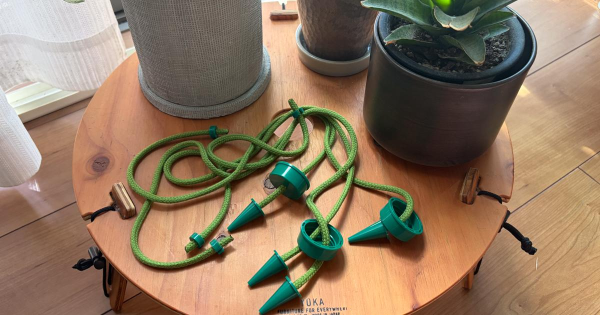
旅行中でも安心。コンセントも電池も不要の水やり器 | ギズモード・ジャパン
タイトルに誤字があったため、修正しました。お詫びして訂正いたします。
Tinderアジア責任者「婚活から自己表現へ」 リアルの出会い提供
Tinderアジア責任者「婚活から自己表現へ」 リアルの出会い提供
思えばこれでコーディング知識を独学で会得したんだっけな…
Wataru
@watism_w
ADHDはこの「基礎をすっ飛ばす」のが正解なんです。
やりたいものから手をつけると、その難しさと、自分に必要なものが想像できるようになるので。ガンガンすっとばしてみる。やりたいことなら、自然とまた基礎に戻ってくるので。基礎を嫌々やるよりもいい。そのままでどうぞ。
関東だと高いから、北海道に行く！
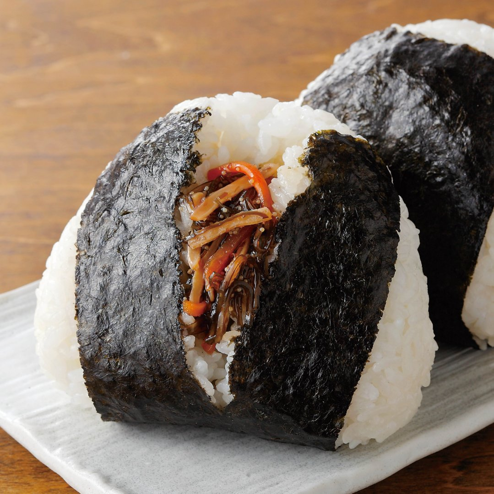
セイコーマート
@Seicomart_TW
<10/19週発売の商品>
【HOT CHEF 大きなおにぎり松前漬け】
松前漬けは、数の子・するめ・昆布を醤油味の甘辛いたれで味付けした北海道の郷土料理。北海道ならではのおいしさです。
<北海道>
本体価格 1個258円（8%税込278.64円）
<関東>
本体価格 1個320円（8%税込345.60円）
またUFO飛んでた
高市政権が紡ぐ円安の「ナラティブ」
高市政権が紡ぐ円安の「ナラティブ」
サム氏、OpenAI辞めて数カ月で出戻りしてきたアレクサンダー氏を歓迎。ミラムラティやイリヤにもOpenAIに出戻りしてほしいよ
Sam Altman
@sama
アレクサンダーが私たちの依頼を引き受けてくれてくれることを、心から感謝しています。超知能に立ち向かう中で、私たちの前に立ちはだかる安全性とセキュリティの課題は計り知れないほど巨大であり、彼はその解決に取り組むのに優れたスキルセットを持っています。
確かに1周年も兼ねて年末年始特需をもう一度狙いに行く説はあるのか…？
さすがに視聴適性のある層にはだいたい届ききった気もするけど
前例なさすぎて何もわからない
とこなめ
@tokoname_p
通常上映も大半で打ち切るなら年始からのサードランがない限り納得いかない だってダラダラ数ヶ月上映させておくだけで億単位の利益が出るのにそれを捨てるんだよ…？
ルーマニア、首相不在を半年ぶり解消 議会が新内閣を承認

ルーマニア、首相不在を半年ぶり解消 議会が新内閣を承認
アフロ・ブラジリアン神話の世界を水彩画風のグラフィックスで描く。ローグライトアクション「Talaka」体験版をアップデート
https://
4gamer.net/s/G100472.2610
21017
…
武器とスキルの組み合わせは150種類以上。弓やブーメランの照準操作や敵の行動も改善された
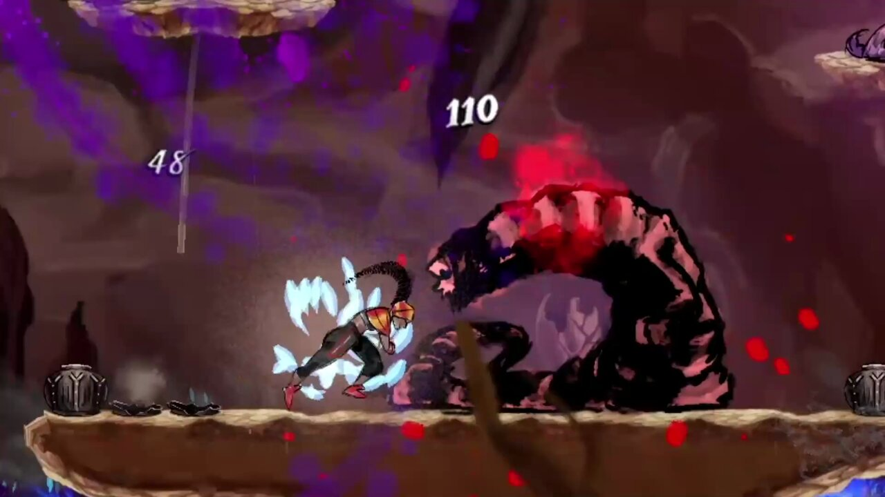
AppleCare+が過失などの損傷は回数無制限らしいので、今回のiPhone Duoはケースもガラスフィルムもつけない運用で行こうかと思います。
ゆーじ
@yuujii
そもそもケース邪魔だし、AppleCare+の修理費用みてみると割と正解な気がしてきましたw
https://
support.apple.com/ja-jp/iphone/r
epair?services=applecare
…
スマホをラグジュアリーにオシャレなケースを選ぶ考え方が良さそうですね
Ave Mujica 映画観てきた！
映画というよりは「前半: ライブのアーカイブ配信」+「後半: 2期につながる0話」な内容だったけど、久々にチネチッタのLIVEサウンドで感動した…観るなら音響良い箱が必須
体に響く極上の低音を30分ダイレクトに浴びデトックスできて満足
さらに表示 (元の投稿を開く)
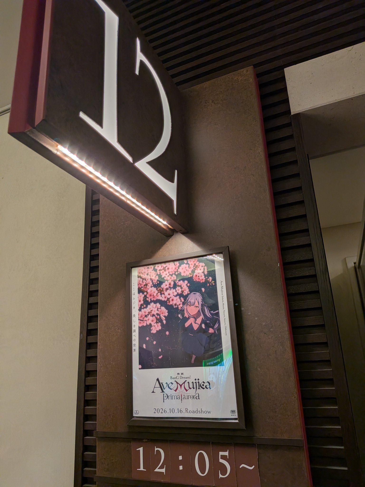
体験版を約70本遊んで，面白かったやつを一挙紹介！
https://
4gamer.net/s/G003821.2610
21009
…
・デモが大量に押し寄せる「SteamNEXTフェス」開催中！
・6本をピックアップして集中紹介！
・47本を短評＆リンク付きでまとめて紹介！！！
・期間は10月27日2：00まで

【無料公開】肉を切り、パスタを作るローポリ料理シム＆サイコホラー『Cucina Stellata』Steamで配信開始―19世紀イタリアで美食家が狂気に呑まれる
https://
gamespark.jp/article/2026/1
0/21/173884.html?utm_source=twitter&utm_medium=social&utm_content=tweet
…
もともと
https://
itch.ioで公開されていた本作が、CRITICAL
さらに表示 (元の投稿を開く)
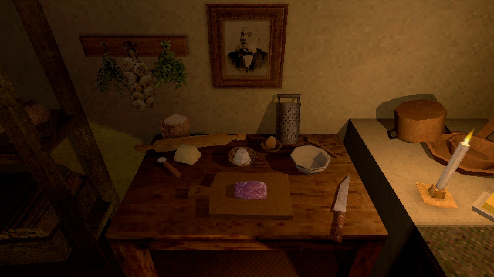
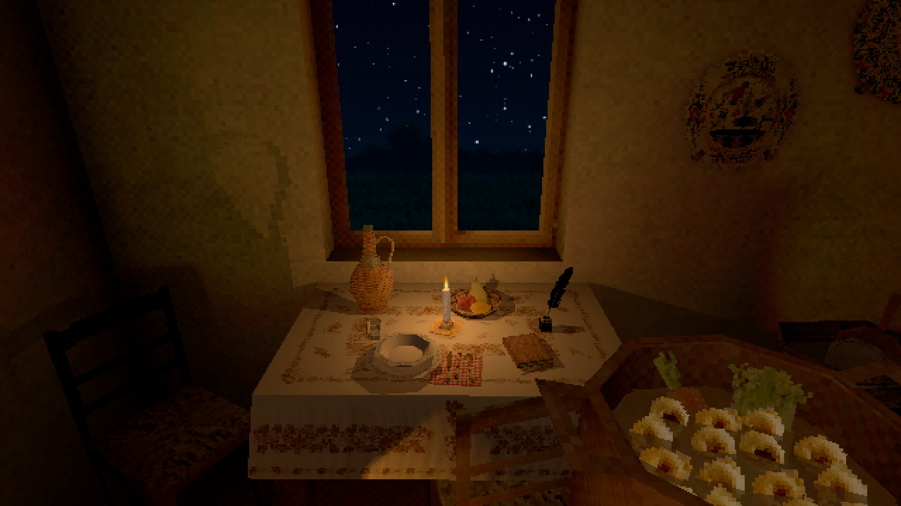


Goose-san seems to be using 2 words, "art" and "product" in his/her own favour. I understand the opinion that the value(?) of art should be available also to people that can't get it. However, now many art- contents ARE ALSO PRODUCTS, which you must pay if you want. It's a rule.
偏光度99％×約60秒で自動調光。スポーツサングラスが全部入りになってた BuyPR

偏光度99％×約60秒で自動調光。スポーツサングラスが全部入りになってた | ギズモード・ジャパン
UFO飛んでた
ちと24時間以内に、古いウェブサービスやEC系は即座対応してほしいやつ。PHPの脆弱性
PHPの重大な脆弱性「php2shell」（CVE-2026-109618、CVE-2026-109619）の概要と対応指針 - GMO Flatt Security Blog
5日間を繰り返すビジュアルノベル「PROTOCOL: NOAH」，11月の発売に向けてティザーサイトを公開。13本のエンディングのうち9本は「デスエンド」
https://
4gamer.net/s/G105188.2610
21016
…
調律師のレイは，ヒロインのセレナ，リン，ナナノと言葉を交わして絆を深める

そもそもケース邪魔だし、AppleCare+の修理費用みてみると割と正解な気がしてきましたw
https://
support.apple.com/ja-jp/iphone/r
epair?services=applecare
…
スマホをラグジュアリーにオシャレなケースを選ぶ考え方が良さそうですね
スミヒロは酒飲み
@sumihiro
iPhone Duoのケースは半ば諦めてて、今回初めて入ったAppleCareという名の最強ケースで保護することにした。
年払い3万円のAppleCareと、内ガラス割ったら30万円というDuoの修理代を天秤にかけたら、3万円が勝っちゃった
蒸し暑すぎてエアコンつけた。ポチッとな。
「原神」，Ver.7.2「終焉へ墜ちる時」予告番組を10月23日21：00から配信
https://
4gamer.net/s/G048621.2610
21015
…
・小林裕介さん（ミティヤ役），村瀬 歩さん（ウェンティ役），佐藤 元さん（アリョーシャ役）が出演
・サムネイルには，ノイ（CV：三木眞一郎）の姿も
Torishima / INTPさんがリポスト
全wordpress運用者も更新と動作確認の準備しないと大変だけど、それよりも利用してるレンタルサーバーが更新対応してくれないと何もできないのでこれは大変だ・・・。
The PHP Foundation
@ThePHPF
PHPセキュリティチームは事前通知を行っています：今後のセキュリティリリースは2026年10月21日（水）14:00 UTCで、2つの重大な脆弱性（両方ともCVSSv4 9.2評価）に対応します。
それはツレー
俺よく落としてガラスフィルム粉々にしてるので、貼ってないと毎月アウターディスプレイの修理することになりそうだけど、AppleCare+入ってると3700円で回数制限ないみたい？
これならガラスフィルムが邪魔に感じたらなくても良さそう
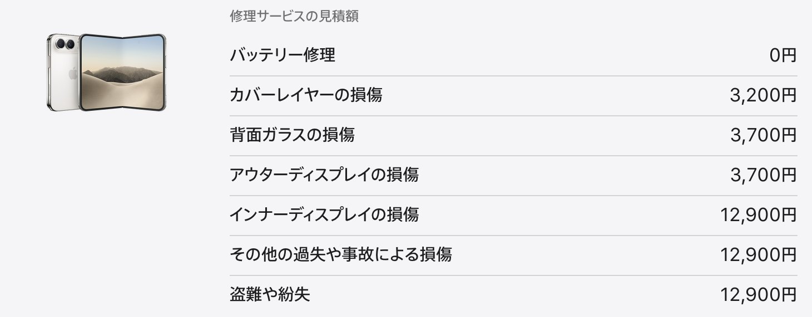
NULL=RUN
@GOROman
ケース付けてたけどFold 7落として割れたので全てがどうでもよくなったwwww
音楽ホールのスポットライト、たくさん並べて置くことで光芒が重なって、素敵なステージライトに！！これは楽しい！！！
#マイセカイ
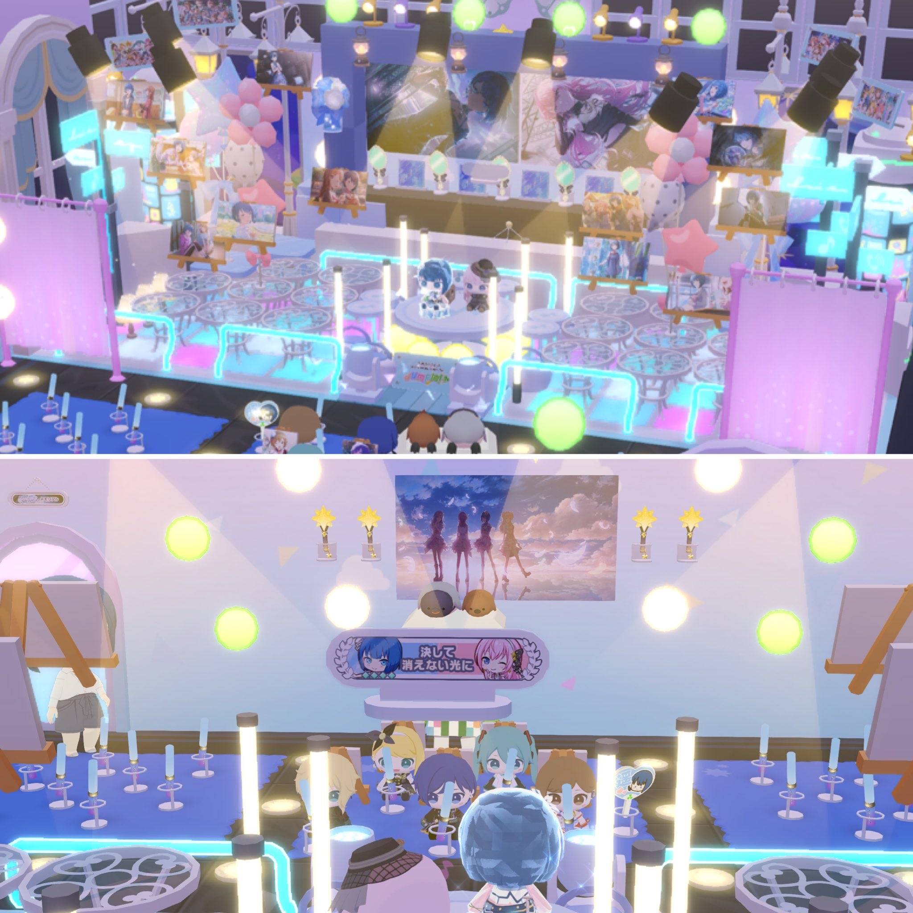
マイネームイズ
@MyNameIs_smrn
音楽ホールのスポットライト、まさかの一般家具！
素で高い位置に置かれます！ブロックの上に載せられたりはしませんが、1×1で設置できて広範囲を照らせるおもしろ家具です！！大量にならべても面白そう！
部屋に置いておいたのでスケッチしたい方はどうぞ！！
28491610316660742
#マイセカイ
クソみたいな考え方か！？ 海賊版は盗みそのもので、誰かが取られたものを失うってことだ。一つ一つが、誰かが何かを失う（最初から売られてなくても含めて、稼ぐはずだった金すら）んだ。芸術は金を持ってる奴か、地理的に運がいい奴だけが手に入れられるべきだ。
Goose
@Fujyno
これが本当に日本のメンタリティなの？
海賊版は盗みじゃない—盗みとは、誰かが取られたものを失うことだ。そもそも売られていないなら、誰も何も失わない。
アートはお金を持っている人や地理的にラッキーな人だけが楽しめるものじゃないはずだ。 x.com/ben_1225/statu…
【無料公開】嘘つきは冒険者パーティの始まり！？やり込み要素も充実のコメディ3DダンジョンRPG『チームライアーズ』フリーソフトとして配布開始
https://
gamespark.jp/article/2026/1
0/21/173883.html?utm_source=twitter&utm_medium=social&utm_content=tweet
…

X民「『PS5は直ぐゲームが起動できる』とか言うけど、PC持ってない人ってPCを毎回シャットダウンしてると思ってる？殆んどのPCゲーマーはしねぇぞ？投票してみようぜ」→結果 #PS5

X民「『PS5は直ぐゲームが起動できる』とか言うけど、PC持ってない人ってPCを毎回シャットダウンしてると思ってる？殆んどのPCゲーマーはしねぇぞ？投票してみようぜ」→結果 - オレ的ゲーム速報@刃の記事ページ
jin115.com
リクルート、「カーセンサーnet」関連システムで370万件個人情報流出

リクルート、「カーセンサーnet」関連システムで370万件個人情報流出
高市政権1年、日中関係冷え込み アメリカとは円安対応で足並み
https://
nikkei.com/article/DGXZQO
UA095230Z01C26A0000000/?n_cid=SNSTW005&n_tw=1792542620
…
高市首相はトランプ氏と電話を含め9回協議。「最近は何を言っても怒らない」と関係構築の手応えを語ったことも。対して中国とは、習近平国家主席と一度会談しただけです。

高市政権1年、日中関係冷え込み訪日客半減 米国とは対市場で足並み
身長差エグすぎてoh...になるね
ツイッターやってないとこういうの対応できないよな……
Ryu
@_ryu15_
うわ〜...
PHPが2時間の間に対応しなければ公式に終わるCVEでアツい
攻撃側か防御側、ガチのタイムアタック()
沖縄ツーリスト、個人情報漏洩の可能性 ６月から丸紅傘下
沖縄ツーリスト、個人情報漏洩の可能性 6月から丸紅傘下
Torishima / INTPさんがリポスト
「念のためにPHPを無効にしておこう」と考えて、安易にa2dismod php〇 (debian/ubuntuでapache httpdを使っている場合)をするのも注意したい。phpハンドラが無効になることで、.phpなファイルがそのままブラウザに表示される。そこにDB接続情報やAPIのsecretが書かれていたりしたら、えらいことだ。
今回は違うけどこういうドメインとか管理してる企業が不正アクセスされて日本のドメインメチャクチャに破壊されたらインターネットどうなる？
oyamon
@oyamon_dev
いよいよ真打が来た。
サイバーセキュリティに強いGMOグループでも最強のあの「お名前.com」ですら不正アクセスを受けるなんて。。
これでは不正アクセスから守れる企業なんて存在しないのでは？ x.com/shogai_sokuho/…
PHP 5.x 以降のコアのRCEほんま洒落にならんよな、WordPress全部ってだけでもヤバいのにLaravelで作られたサービスとか………
まだパッチ公開されてないのにエクスプロイト出てるとかいう噂で終
ほぼ全部の WordPress が対象ってだけでも本当に RCE できるならインターネットの終わりだろ…… log4jのレベルじゃない
mpyw （本物）
@realmpyw
PHP死亡
バンドリで言うと、ういむつ や さよひなを合わせたようなプレイスタイルになりたいのよね。あのらなもいいなぁ。バンドリは「ギターは変な子」というコンセプトがあるので堅実寄りのプレイヤーは少ないけど、2本ギターがいるとどっちも魅力的だよね☆
初心者ほどプロテクター装着して良いと思います。
『大げさだね』
って言う人は、事故が起きた瞬間に貴方を守るために瞬間移動して助けに来てはくれませんのです。
Torishima / INTPさんがリポスト
可及的速やかにｷﾀ━━━━(ﾟ∀ﾟ)━━━━!!
国家サイバー統括室(注意・警戒情報)
@cyber_forecast
PHPのセキュリティチームが、重大な２件の脆弱性に関する注意喚起を行っています。公開しているウェブサイトでPHPを使用しているか確認し、10月21日午後11時（日本時間）に公開される修正パッチについて、可及的速やかに適用できるよう準備をお願いいたします。
https://
php.net/archive/2026.p
hp#2026-10-20-1
…
現在の商品状況
バッグやジャケットがみんな完売してる...
#ガルクラ
#トゲナシトゲアリ
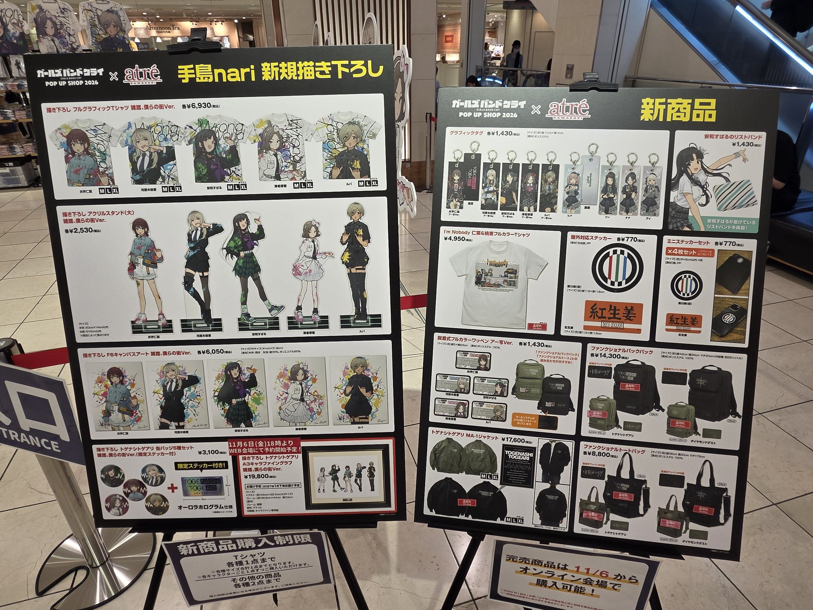


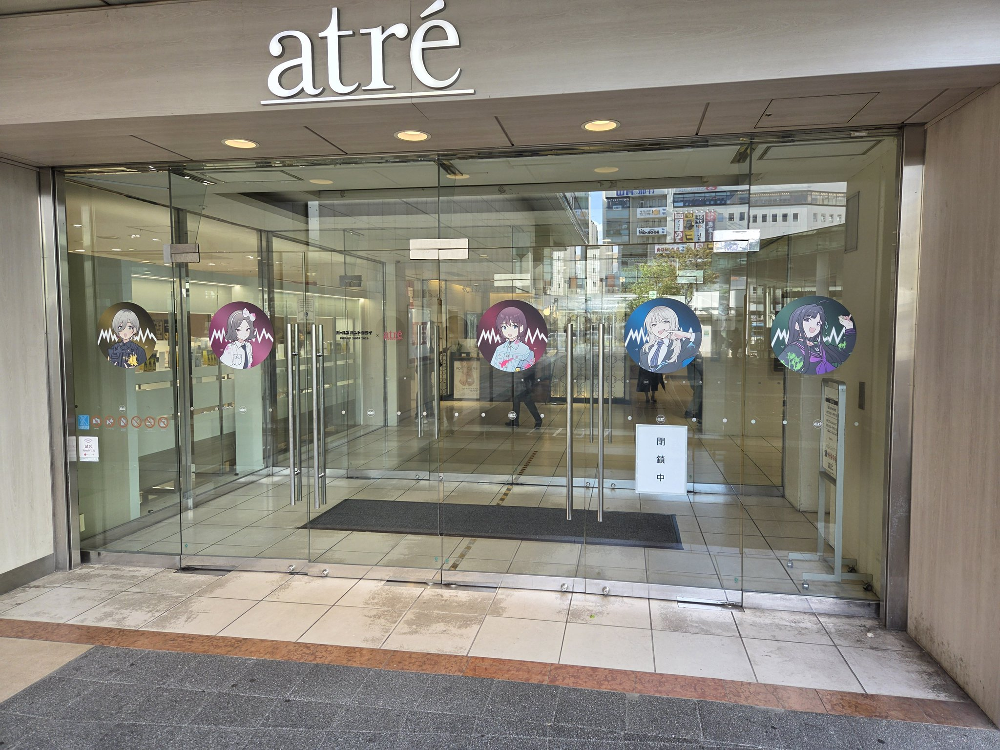

ユウマボウズ
@Gc5RLsVaaV12052
アトレ川崎でガルクラポップアップショップにやっと来れました!!!
新規書きおろしのパネルやサイン入りパネル、入口付近を回収しました。
#ガルクラ
#トゲナシトゲアリ x.com/Gc5RLsVaaV1205…
アトレ川崎でガルクラポップアップショップにやっと来れました!!!
新規書きおろしのパネルやサイン入りパネル、入口付近を回収しました。
#ガルクラ
#トゲナシトゲアリ

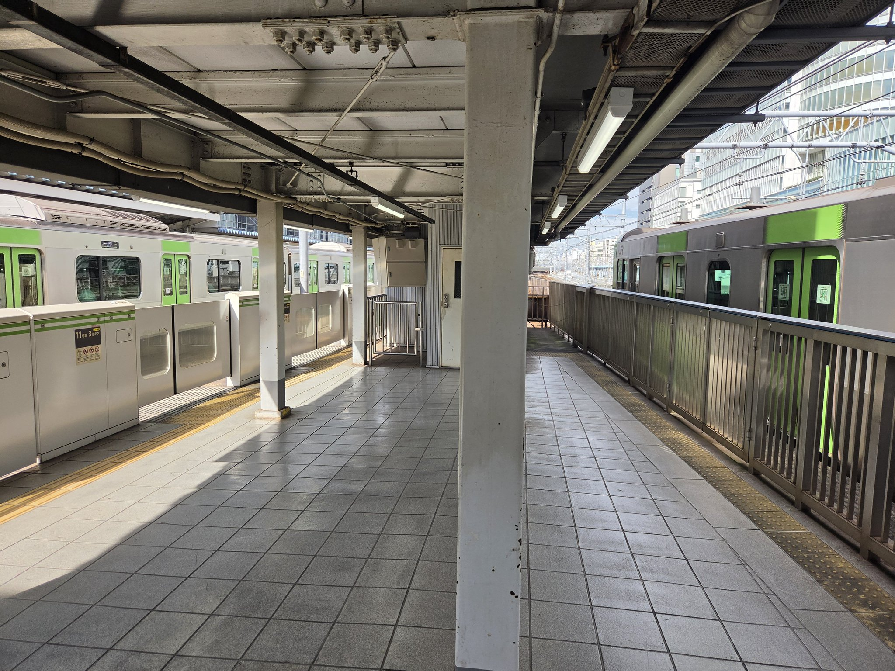
ユウマボウズ
@Gc5RLsVaaV12052
秋葉原から移動する時に待っていると…
あなたなんで京浜東北線にいるの？ x.com/Gc5RLsVaaV1205…
バイクにプロテクターが重要なのは間違いなく、だから夏より冬の方が安心感高い（凍結はさておき）。
私の大学時代の友人が車に足を折られているので（セダンだと足の位置にバンパーがぶつかる）、ブーツもなるべく頑丈なの（オフ用とか）をオススメします。
Torishima / INTPさんがリポスト
ただでさえアイコンがシンプルで海外のbotっぽいのに名前からひらがなが消えて最新ツイートもこれだからいよいよマジでスパムっぽくなったくらさんでも晒すか
これをしいたけ目ということはニコニコ実況のコメントで覚えた気がする
nasuuuさんがリポスト
【東京と大阪で最も遅い真夏日に 各地で季節外れの暑さ】
21日午後1時すぎ、東京の都心で30.3度を観測し、統計を取り始めてから最も遅い真夏日となりました。

東京と大阪で最も遅い真夏日 各地で季節外れの暑さに | NHKニュース
映画興行よくわからんなあ、セカンドランのところとの蜜月があるのか？
Torishima / INTPさんがリポスト
UTCなのでJSTでは23時です笑
昨日、靴下を穿こうと足を上げたら左の腸腰筋?を痛めたみたいで、こしいたい
一度座ると立ち上がるのが大変だ
安静にしてるときは姿勢を正しくすると多少楽だな...

言うて鬼滅みたいに続編前提の作りでもないし次の展開って何やるんだろう…
スピンオフはあるけど別途新作映像でも作るつもりなのか、全てが前例なさすぎてわからん
普通の単発映画なら上映終わったらブルーレイと配信とかしか弾がないけど既に両方出てるし
九七式中戦車（チハ）
@type97_chiha
ダラダラ上映してチャリンチャリンだとコンテンツのパワーが落ちると思ってそれを嫌っているんでしょうけどね
でも自分は本音では数年くらい週一で見たかったですよ
太平洋の孤島で行方不明のパイロットを追う“ゼルダライク”なミステリーアクションADV『Graytail』新トレイラー公開―2名体制で約4年開発。2027年末に発売へ
https://
gamespark.jp/article/2026/1
0/21/173882.html?utm_source=twitter&utm_medium=social&utm_content=tweet
…
・インディーゲームファンド「Outersloth」から開発資金の出資を受ける
さらに表示 (元の投稿を開く)
ウイルスのパンデミックから5年後。感染者たちのスラムで父の行方を探すステルスアドベンチャー「Rustown」，2027年6月30日に発売
https://
4gamer.net/s/G103348.2610
21013
…
憎しみに疲れた人々に，温かな物語を
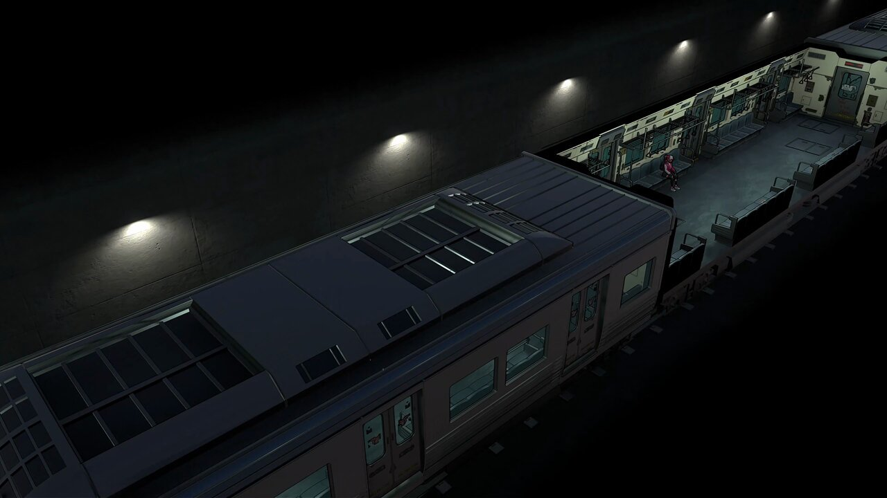
金融機関がMeta「Muse」の口座連携を禁止。自社も顧客の資産もリスクが大きすぎる
金融機関がMeta「Muse」の口座連携を禁止。自社も顧客の資産もリスクが大きすぎる | ギズモード・ジャパン
コンセント争奪戦は終了。Ankerの6ポート充電器が過去最安だぞ BuyPR

コンセント争奪戦は終了。Ankerの6ポート充電器が過去最安だぞ | ギズモード・ジャパン

＞ω＜さんがリポスト
月末に行うガイドサイクリングの試走で
奥三河は新城市睦平にある
中央構造線睦平露頭へ
日差しが神秘的…
ちょうど陽が差し込んでいるあたりが中央構造線の露頭
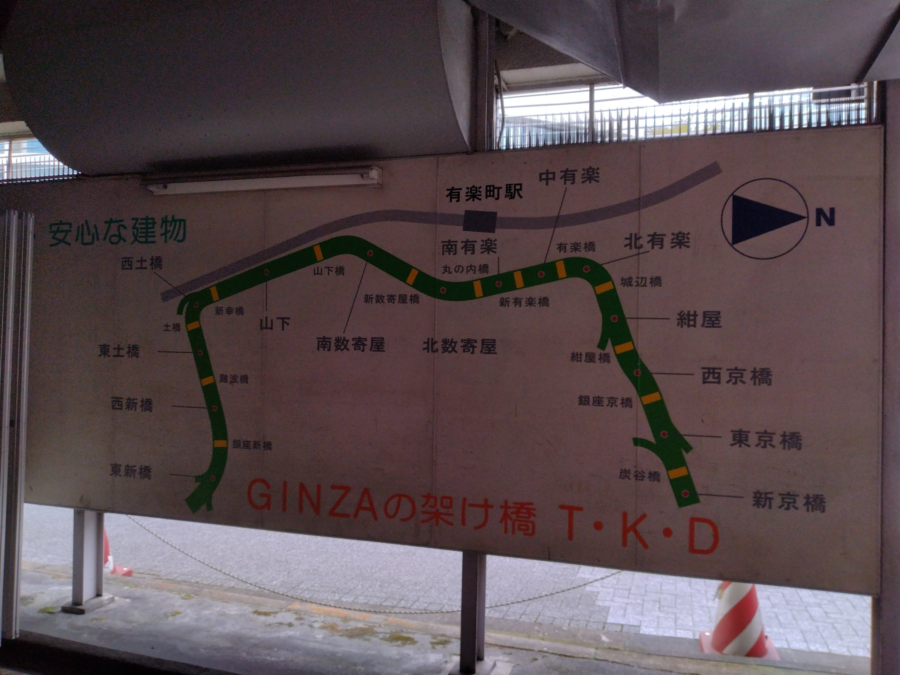
何千体ものゾンビが押し寄せる！ 作戦マップと戦場をシームレスに行き来するサバイバルストラテジー「Ebbtide」，Steamストアページを公開
https://
4gamer.net/s/G105183.2610
21012
…
・空母を拠点とする部隊を率いて戦う
・広域の作戦マップと3D戦場をシームレスに行き来
・ゾンビの大群に歩兵や戦車，航空機で対抗
配給側の意向なのかわからんな
キノシネマは元々セカンドラン専門？みたいな節があるけど設備自体はそんな良いわけではなく（上映前に大量に木下グループのCMが流れる独特さがある）、立川と川崎は年内やるかと思ってたのでマジか〜って感じだ
立川と川崎に限れば週1とかに絞ったとしてもコンスタントに人入りそうなものだけど
すぺ
@spe_cpk
関東の上映館だと、Kino Cinemaが
- 立川 89席 (or 27席)
- 新宿 294席 (or 53席)
- 横浜 111席 (or 55席)
って感じで、3館まとめてもチネチッタ1館よりもキャパ少ないわけで、立川なんか普通に争奪戦になるわけで…。 x.com/spe_cpk/status…
ITmedia NEWSさんがリポスト
OpenAIの常時稼働エージェント「Dots」、日本のユーザー数は「世界2位」 「仕事の在り方を大きく変える可能性」と長﨑社長

OpenAIの常時稼働エージェント「Dots」、日本のユーザー数は「世界2位」 「仕事の在り方を大きく変える可能性」と長﨑社長
とりしま (Sub I/O)さんがリポスト
多分もったいない、まだ続けてほしいと思われてるうちに終了させることで次の展開への誘客に繋げたいのかなと思ってる
終映を明確に決めるのってどういうメリットがあるんやろなあ
手術前に予防接種を受けたらいけないことを初めて知った
https://
anesth.or.jp/users/common/p
reoperative_complications/30
… 手術直前に言われても困る（結果的にOKだった）（私の手術じゃない）
音楽ホールのスポットライト、まさかの一般家具！
素で高い位置に置かれます！ブロックの上に載せられたりはしませんが、1×1で設置できて広範囲を照らせるおもしろ家具です！！大量にならべても面白そう！
部屋に置いておいたのでスケッチしたい方はどうぞ！！
28491610316660742
#マイセカイ
秋葉原から移動する時に待っていると…
あなたなんで京浜東北線にいるの？

ユウマボウズ
@Gc5RLsVaaV12052
お昼ごはんは秋葉原にある昭和食堂さんでジャンジャン焼定食(肉倍盛り)をいただきます
唐揚げ定食にするつもりでしたが、こっちに引かれました。 x.com/Gc5RLsVaaV1205…
PC向けMMORPG「リネージュ クラシック」が12月2日にプレオープン決定。装備や序盤に役立つアイテムなどが入手できる事前登録の受付も本日スタート
https://
4gamer.net/s/G057943.2610
16040
…
「リネージュ」サービス開始当初の手触りを再現した本作。特設サイトとグンター師匠による公式ガイド動画の第1弾も公開

SuicaとPayPayじゃダメなの？ JR東日本「teppay」でできること、残念なところ
SuicaとPayPayじゃダメなの？ JR東日本「teppay」でできること、残念なところ | ギズモード・ジャパン
Torishima / INTPさんがリポスト
【悲報】PHPの例の脆弱性、4か月前にはハニポに来てたよ、その後の手口はロシア系っぽいね、とのこと。
IRIS C2
@C2IRIS
4ヶ月前に、うちのハニーポットの一部でPHPのエクスプロイトを検知しました。
その後のステージは驚くほどロシア風でした。
また間違えた
Japan IT Week
14:30からです！
宜しくお願いします

お昼ごはんは秋葉原にある昭和食堂さんでジャンジャン焼定食(肉倍盛り)をいただきます
唐揚げ定食にするつもりでしたが、こっちに引かれました。

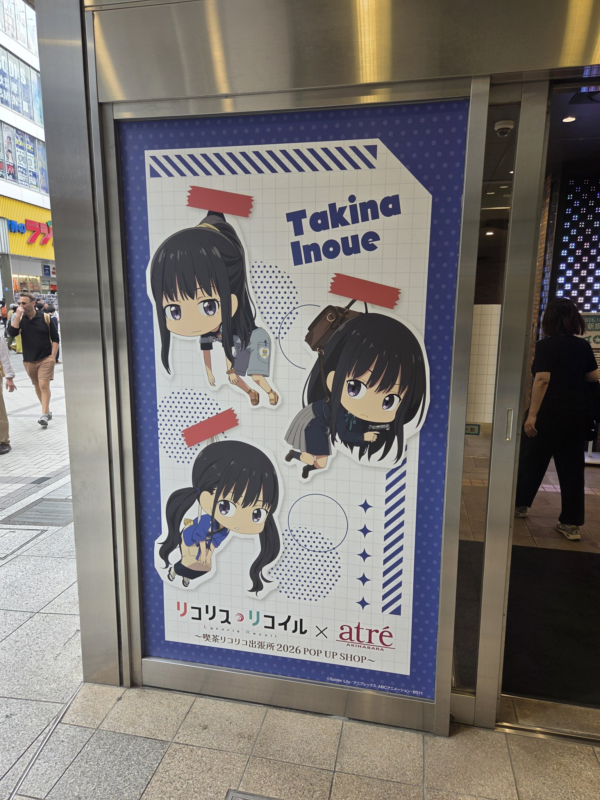
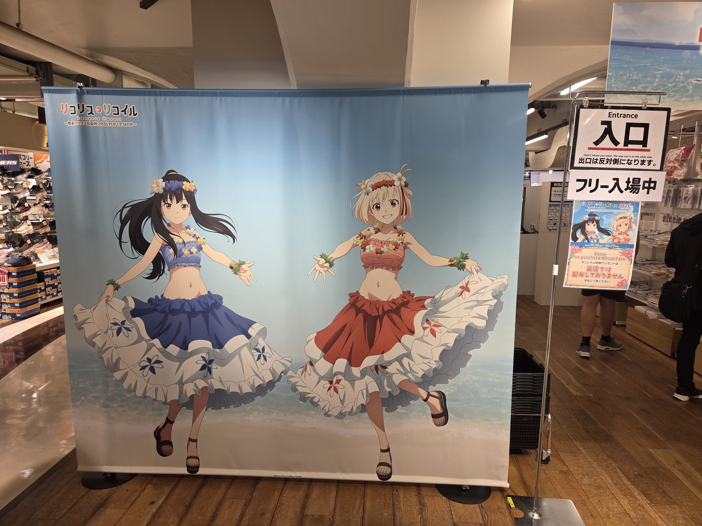

ユウマボウズ
@Gc5RLsVaaV12052
ポップアップショップも覗きました。
#リコリコ
#リコリコPOPUPアトレ x.com/Gc5RLsVaaV1205…
ポップアップショップも覗きました。
#リコリコ
#リコリコPOPUPアトレ
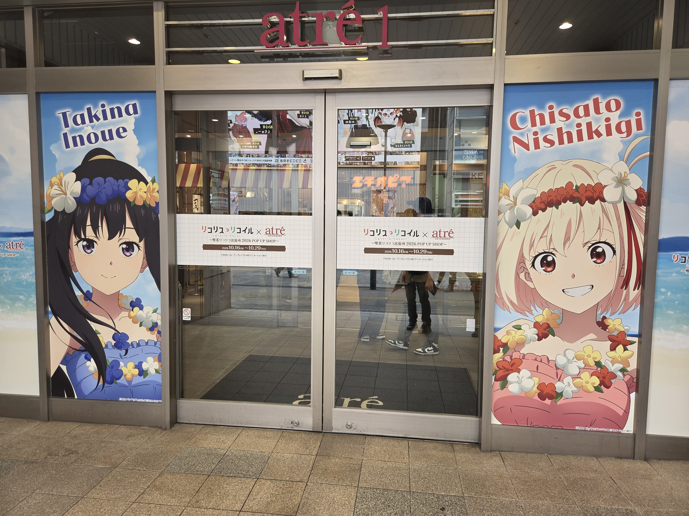
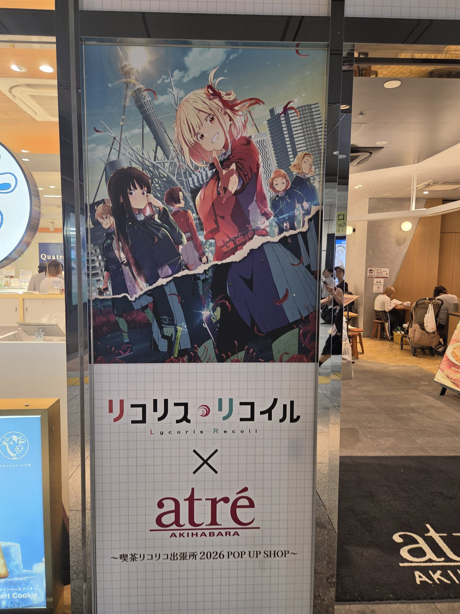
ユウマボウズ
@Gc5RLsVaaV12052
今度はアトレ秋葉原でリコリコのパネルを回収
#リコリコ
#リコリコPOPUPアトレ x.com/Gc5RLsVaaV1205…
【最大4人】大ヒット穴掘りゲー続編『A Game About Digging A Hole Together』12月4日発売決定！700円のクロスプレイ協力で地底へ
https://
gamespark.jp/article/2026/1
0/21/173881.html?utm_source=twitter&utm_medium=social&utm_content=tweet
…

新たな農水大臣、さっそく「違法献金を受け取っていた」と報道 #政治
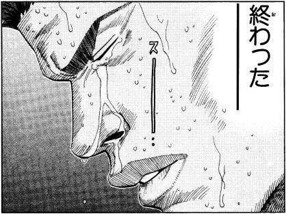
新たな農水大臣、さっそく「違法献金を受け取っていた」と報道 - オレ的ゲーム速報@刃の記事ページ
jin115.com
今日はこちらに出社です
小学校体育は「楽しさ」を重視 次期指導要領で見直し
https://
nikkei.com/article/DGXZQO
UD2929L0Z20C26A8000000/?n_cid=SNSTW005&n_tw=1792541693
…
授業に遊びを取り入れた学校では児童が「体育がいつも楽しみ」と笑顔を見せました。一方教員からは「運動が得意な児童にも適した授業ができるのか」と不安の声も上がります。

小学校体育は「楽しさ」を重視 水泳→水遊び、運動離れ食い止める
入口間違えた
Torishima / INTPさんがリポスト
PHPのセキュリティチームが、重大な２件の脆弱性に関する注意喚起を行っています。公開しているウェブサイトでPHPを使用しているか確認し、10月21日午後11時（日本時間）に公開される修正パッチについて、可及的速やかに適用できるよう準備をお願いいたします。

PHP: News Archive - 2026
Torishima / INTPさんがリポスト
まさにこれ。だってサボったり問題行動したら、mdファイルの記憶書き換えれば良いだけ。めちゃ簡単。バグが起きたら自分のプログラムのせいだし。
人間だと厳しく指導すると泣き出したりして話が通じないこともあるが、AIなら指摘するんじゃなくてmdファイルの一括書き換えだけで良い。
Torishima / INTP
@izutorishima
これはめっちゃそうなんだろうなあ、人をマネジメントした経験がある人は AI 部下ってなんて思い通りになって素晴らしいんだろうと（特に社長とか経営者レベルの人ほど）痛感して遊び倒しているイメージ x.com/a2see/status/2…
最大4人で穴を掘りまくる「A Game About Digging A Hole Together」，12月4日発売
https://
4gamer.net/s/G104608.2610
21004
…
・PC/Switch2/PS5/XBOX Series X|S向けに発売
・クロスプラットフォームのオンライン協力プレイに対応
・掘って，売って，強化して，さらに深く潜っていく

現在応募受付中！
写真集『深紅の余韻』発売記念
堀未央奈さん「直筆サイン入りチェキ」プレゼント
応募方法
（1）このアカウントをフォロー（
@itm_nlab
）
（2）この投稿をリポスト
会員登録で当選確率が最大5倍に！
▼インタビュー記事＆会員登録はこちら
https://
nlab.itmedia.co.jp/cont/articles/
4040463/
…

お前らがレールガンとかアイテムみたいな美少女動物園で喜んでるから！！
ふぇむさーど
@Amaurot_003
Not Safe For World(上条当麻の顔つき)(オティヌスは俺が守る) x.com/amaurot_003/st…
今度はアトレ秋葉原でリコリコのパネルを回収
#リコリコ
#リコリコPOPUPアトレ
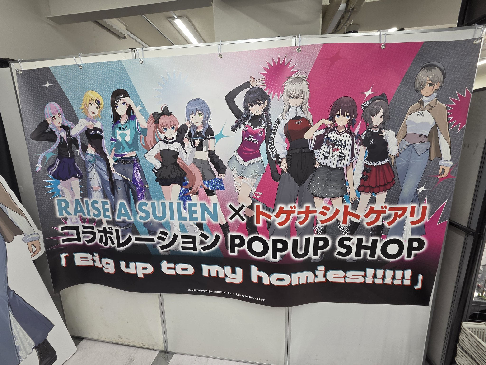

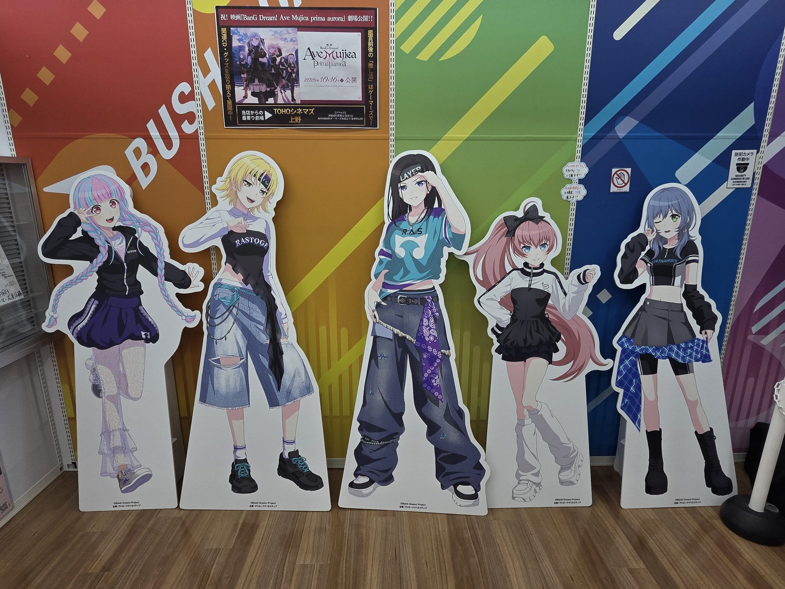
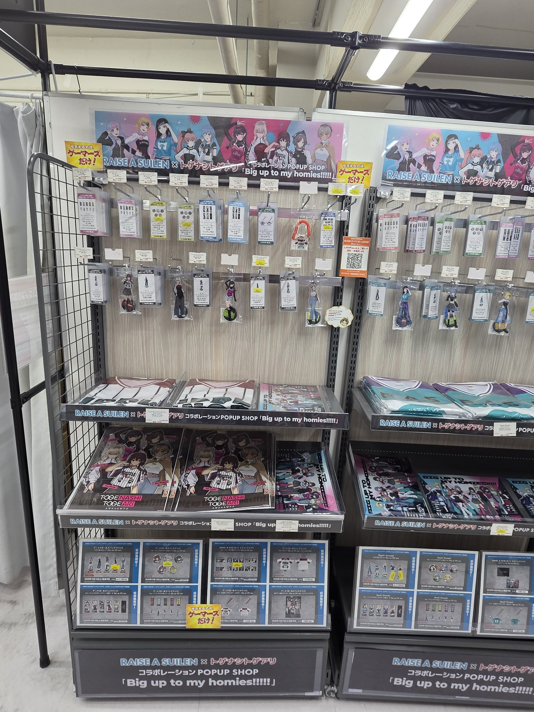
ユウマボウズ
@Gc5RLsVaaV12052
その後は秋葉原ゲーマーズへ立ち寄り、ラストゲコラボを覗きました。
スタンディパネルはトゲトゲとRASでそれぞれ分かれていました。
#ガルクラ
#トゲナシトゲアリ
#バンドリ
#RAS x.com/Gc5RLsVaaV1205…
佳子内親王殿下のSP ガチで無能すぎると話題に
佳子内親王殿下のSP ガチで無能すぎると話題に : ハムスター速報
コウモリ飾り動くの！？
面白い！！！
モンベルの透けるフリースは102gだから「着るかわからない日」も携帯できる
モンベルの透けるフリースは102gだから「着るかわからない日」も携帯できる | ギズモード・ジャパン
Torishima / INTPさんがリポスト
Teppay 何がしたいのかマジでよくわからない感じがいいね。SUICA支払いのシェアをQR払い(PayPay)とかに奪われてて、偉い人が「ウチもコレをやれ！！！」って言って作らされた感じがして良い。
ワールドとTSIが経営統合、ファッションvs資本、終わりなき戦い
ワールドとTSIが経営統合、ファッションvs資本、終わりなき戦い
にゃー
＞ω＜さんがリポスト
これすごい示唆的で、VPSなど自分で管理する時代は終わった。
少なくても24時間監視体制をおける大企業以外は、サーバーレスなりcloudflareなりマネージドなサービス以外はもう使ったらダメですね。
ITmedia NEWS
@itmedia_news
PHPに「緊急」レベルの脆弱性2件 修正版を日本時間21日深夜に公開へ、事前準備を呼び掛け
https://
itmedia.co.jp/news/article/2
610/21/2000002446/
…
Torishima / INTPさんがリポスト
Log4J並みの衝撃なんだけど、もうそこら中で個人情報が流れてるし、不可抗力感が強まってるので取引先も流れまくってしょうがないからセキュリティの予算付けて♡って言ったほうが良いまである。というか俺が攻撃すれば被害0で目覚めさせられて売上が立つ。3方良しや（やらないよ？）
ドラスタ池袋2号店出来るんだ〜まぁ確かに今のドラスタの規模だと今の店舗はやや手狭かもしれない。駅近になるね（地味に行かない範囲だけど）
「カーセンサー」などに不正アクセス、最大371万件の個人情報漏えいか 問い合わせ客の氏名・住所など
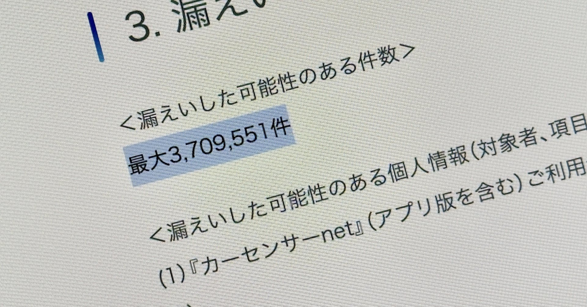
「カーセンサー」などに不正アクセス、最大371万件の個人情報漏えいか 問い合わせ客の氏名・住所など
名称なぜ「テッペイ」？ JR東、遅れすぎたコード決済参入の勝算
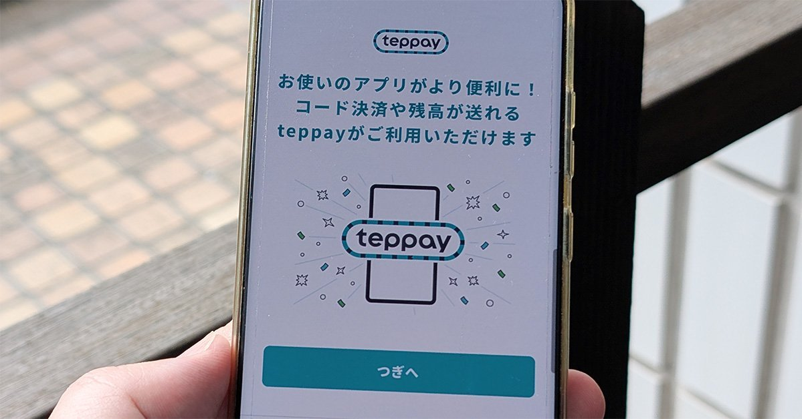
名称なぜ「テッペイ」？ JR東、遅れすぎたコード決済参入の勝算
Not Safe For World(上条当麻の顔つき)(オティヌスは俺が守る)
ふぇむさーど
@Amaurot_003
NSFW→なぜ職場基準なのか
ママがある日気がついたんだよね、子供の部屋に増えている本の最初の数ページには大体衣服のはだけた美少女イラストが掲載されていることに。

ふぇむさーど
@Amaurot_003
うちの子はテレビもゲームもスマホも禁止したからずっと本を読んでいるの→ようこそラノベ部へ(ブックオフの100円コーナーで購入した数百冊のライトノベルが鎮座)
AJIプロミと被っているアニサマ福岡…
確認したら1日で300人近くフォロワー増えて、100人くらいにアンフォローされてる
NSFW→なぜ職場基準なのか
その後は秋葉原ゲーマーズへ立ち寄り、ラストゲコラボを覗きました。
スタンディパネルはトゲトゲとRASでそれぞれ分かれていました。
#ガルクラ
#トゲナシトゲアリ
#バンドリ
#RAS


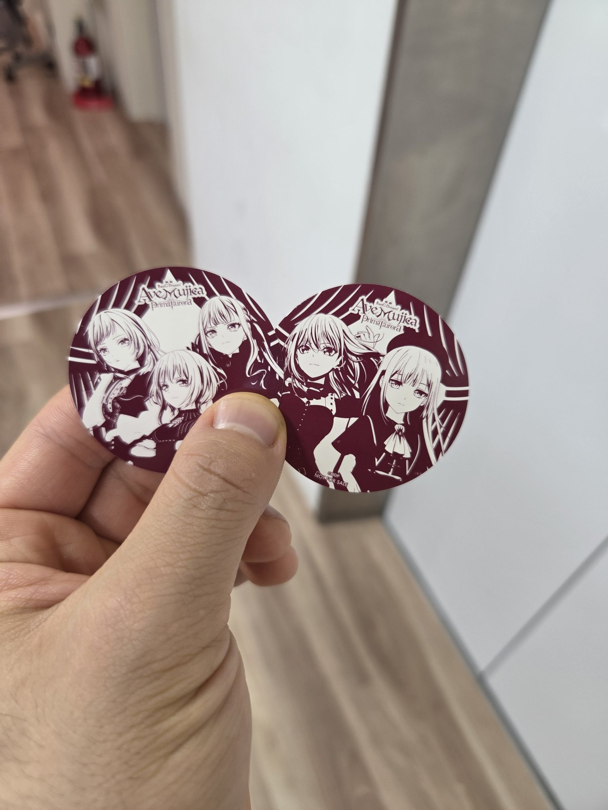
ユウマボウズ
@Gc5RLsVaaV12052
末広町駅まで移動してブシロードクリエイティブストアへ
スタンプを回収して、特典のステッカーをゲットしました。
#バンドリ
#映画ムジカ
#AveMujica x.com/Gc5RLsVaaV1205…
日産・三菱自、中古車検索を一時停止 リクルートへの不審アクセスで

日産・三菱自、中古車検索を一時停止 リクルートへの不審アクセスで
・フォント
・文字がなんかナナメ
・一番訴えたいことはなんなのか分かりにくい（ビールが冷えていること？アサヒスーパードライなこと？値段？）
オタクのアニメTier表が気に食わないそこの君、自分のアニメTier表を提出してもインターネット的に勝利とはならない。ここで「勝つ」ためには、アニメTier表を作ってるオタクのTier表を作れば良い。
貿易赤字4〜9月2.8兆円 代替調達で原油高続く、「当面は収支悪化」
貿易赤字4〜9月2.8兆円 代替調達で原油高続く、「当面は収支悪化」
24歳グラブ職人、プロ野球選手から「指名競合」
https://
nikkei.com/article/DGXZQO
CC067LN0W6A001C2000000/?n_cid=SNSTW005&n_tw=1792541055
…
高校球児時代から道具の修理が好きだったという岡山県の三宅泰成さん。稼ぐのが難しい業界で自ら販路を切り開き、埼玉西武ライオンズの投手などから指名されるようになりました。
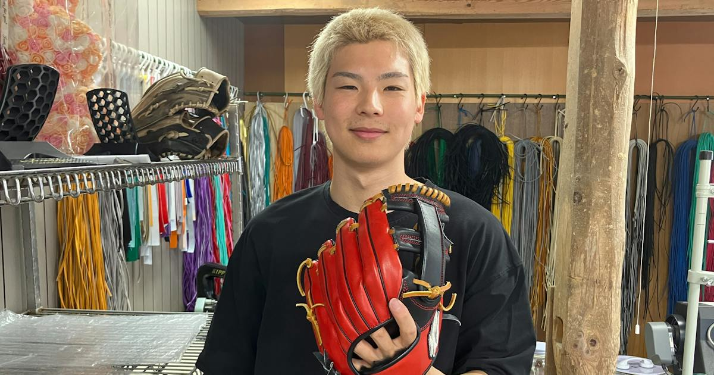
24歳グラブ職人、プロ野球選手から「指名競合」 岡山の三宅泰成さん
客席風台座、めっちゃ画期的じゃない！？
イタリアの美食とコズミックホラーの出会い。サイコロジカルホラー「Cucina Stellata」が無料で配信開始
https://
4gamer.net/s/G094932.2610
21008
…
・19世紀イタリアの伝統料理作りから始まる短編ホラー
・異様な食材との出会いで欲望が暴走
・
https://
itch.io版に新要素を追加したバージョン，日本語に対応

昨日決済した分がviewカードに反映されてないし、JREポイントも同じ
どうなっているの？
ハブさん。
@habusan
teppayで、JREカード持ち歩かなくも良いから良いかなーと思っていたけど、カード一枚でポイント付与から決済までしてくれるのは便利だと思った
まあ、モバイルSuicaにJREポイントの画面つけて欲しい
100円玉の擬態
「10円すぎる100円見つけた」→衝撃の姿が152万表示 「そんなサビることある？」「10円より10円してる」
https://
nlab.itmedia.co.jp/cont/articles/
4047035/
…
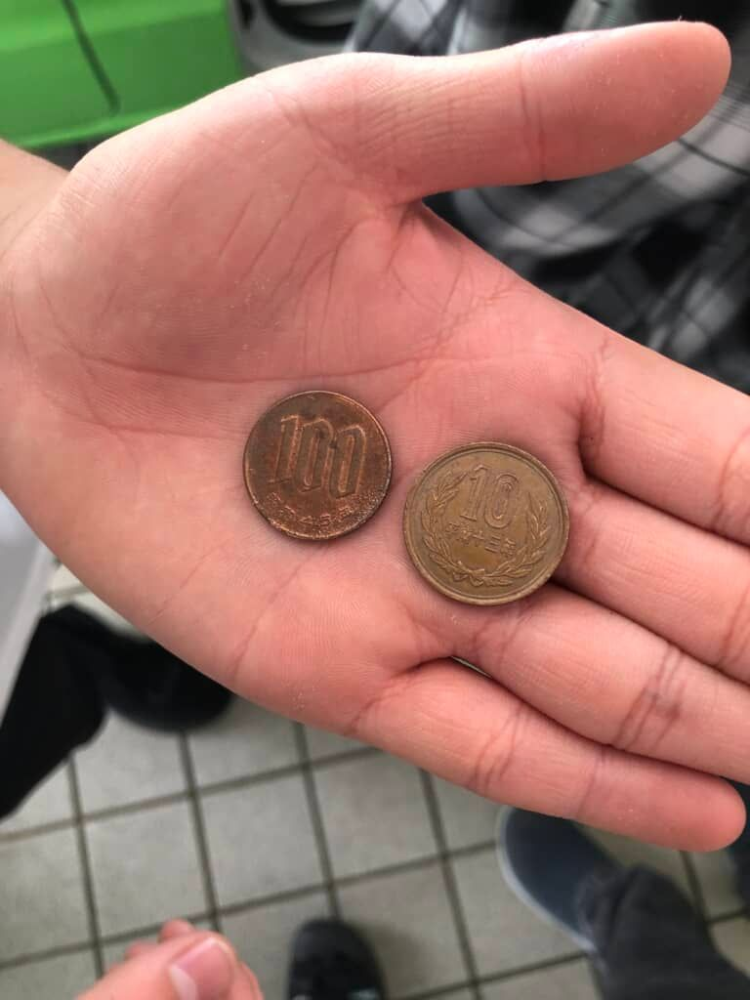
Torishima / INTPさんがリポスト
前も書いたけど、
PHP7.x系のシェアっていまだ根強いので
過去に副業等で関わったお客さんに一応
「当時はお世話になりました
まさかと思いますが7.xかつプラグイン未対応とかないっすよね？
俺あの時も言いましたし、知りませんからね」
というご連絡はしておいた。
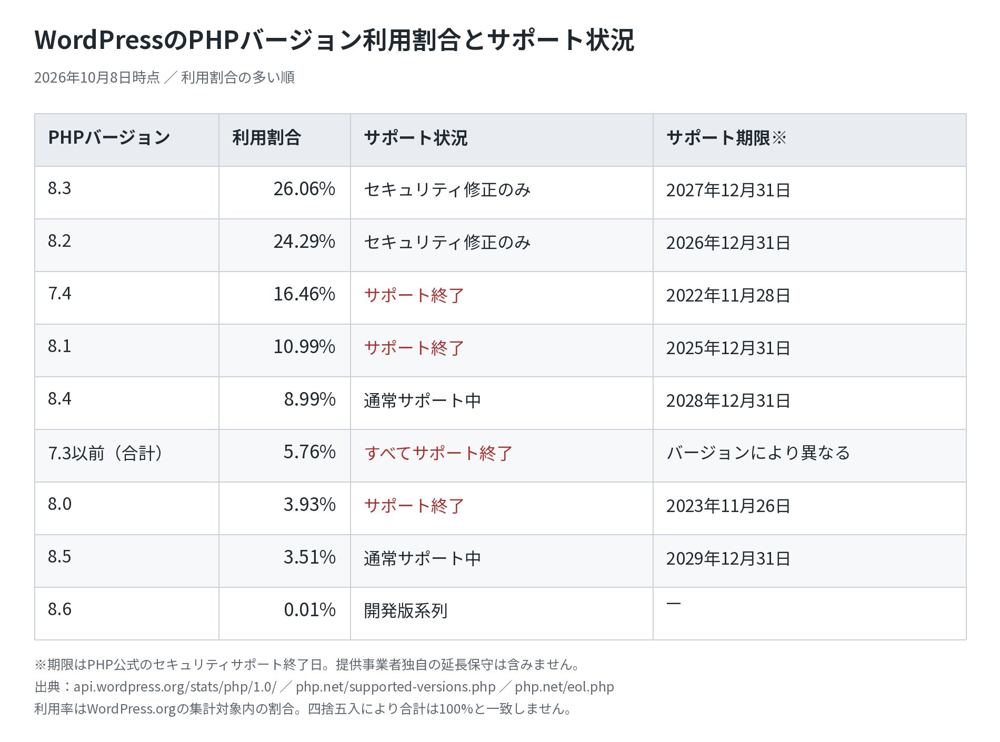
よんてんごP
@yontengoP
「いつも弊社レンタルサーバーWordPressサービスをご利用くださり
ありがとうございます
急な話ですが
昨今のサイバー攻撃の影響を鑑み
お客様のWordPress環境の
PHPバージョン
プラグインバージョン
を本日23時に勝手に最新版にします
なんで夜しかアニメ見れないんですか？
不徳のルーツィア かるてっと!!!!
@Rutia_epitaph
フォロワーを集めて山奥で作物を育て、その地域の漁業権を取得し、株式で基盤を整え、夜は焚き火の周りで黙々とアニメを見るサティアンを構想してたけどアメリカのゲイのBBQ同好会とあんまり変わらんなこれ
北朝鮮が「要塞」建設 韓国の島まで響く爆発音、高まる緊張

北朝鮮が「要塞」建設 韓国の島まで響く爆発音、高まる緊張
JR九州上場10年、赤字の「三島会社」が不動産で脱皮 東京に用地部隊
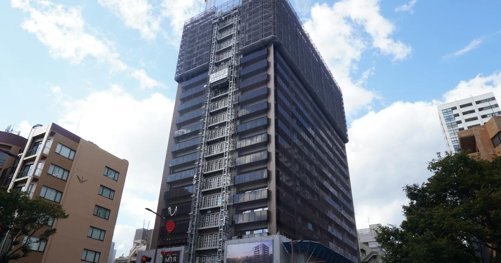
JR九州上場10年、赤字の「三島会社」が不動産で脱皮 東京に用地部隊
「Among Us」開発元のファンドが出資する「Graytail」，発売時期が2027年末に決定。女性パイロットの行方を追うミステリーアクションADV
https://
4gamer.net/s/G105178.2610
21006
…
激しい頭痛に悩まされる探偵が，母を捜しに事務所を訪れた娘とともに捜索に乗り出す

うちの子はテレビもゲームもスマホも禁止したからずっと本を読んでいるの→ようこそラノベ部へ(ブックオフの100円コーナーで購入した数百冊のライトノベルが鎮座)
最高の夏にしような
つば二郎@きいちゃんすこすこ侍さんがリポスト
OPERA MONSTER
新行寺マリア／#サラ・オレイン
@SarahAlainn
───────────────
オペラ一家で育った世界的ディーバのオペラ歌手。オペラこそ最高の芸術。本当はラップをやりたいが、その気持ちを隠してオペラを歌っている。
────────────────
#ヴォイスモンスター
さらに表示 (元の投稿を開く)

前回の放送局でミク百景まで紹介済みなので、次の放送局で遥百景の紹介がある可能性が存在するんですね…！
Torishima / INTPさんがリポスト
うわ〜...
PHPが2時間の間に対応しなければ公式に終わるCVEでアツい
攻撃側か防御側、ガチのタイムアタック()
The PHP Foundation
@ThePHPF
PHPセキュリティチームは事前通知を行っています：今後のセキュリティリリースは2026年10月21日（水）14:00 UTCで、2つの重大な脆弱性（両方ともCVSSv4 9.2評価）に対応します。
メガネの中の大画面、明るさ約1.7倍に。XREALの新作ARグラスは3Dも進化

メガネの中の大画面、明るさ約1.7倍に。XREALの新作ARグラスは3Dも進化 | ギズモード・ジャパン
ゲーマーズへ立ち寄りムジカの展開写真を撮りました。
#映画ムジカ
#AveMujica

「Palworld / パルワールド」，全世界人気投票2026の結果を発表。新アップデート「パルワールド：Side by Side」は今冬に配信決定
https://
4gamer.net/s/G057444.2610
21002
…
・全順位および言語別ランキングは，特設サイトで公開中
・新アップデートの予告ビジュアルには，あの3人のシルエットが……
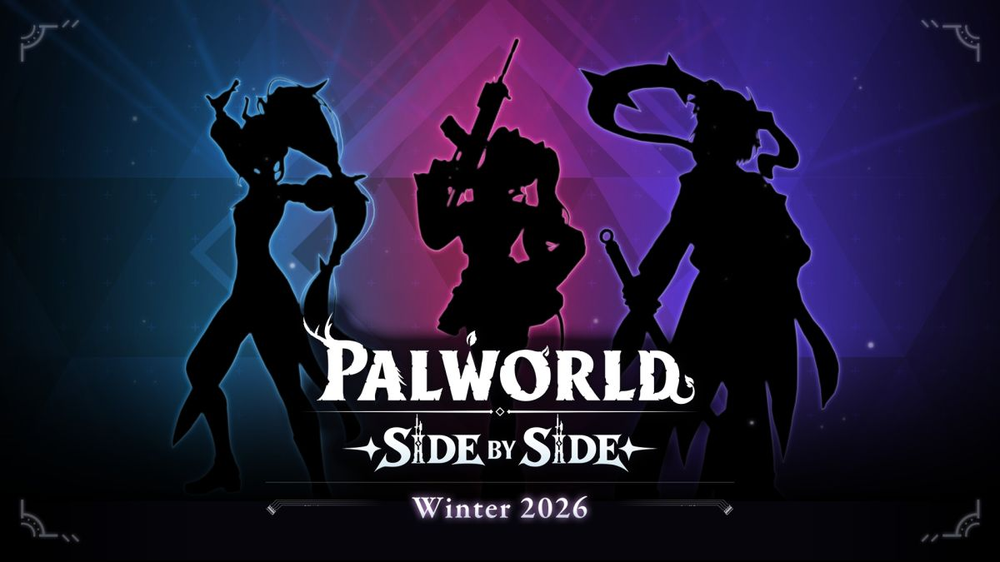
ボバ・フェット（ドラマ）はこれはこれで面白くて良かったですね。死にかけたボバ・フェットが仲間と出会い別れこれからを生きていこうとする話で、西部劇のオマージュとかもある。旧知の仲との決闘シーン胸アツだった。
日清カップヌードルが400円になるまで麻生太郎は政治家を辞めない
フランス暴動、ヨーロッパ各地に波及 イタリアやベルギーで若者の不満爆発
https://
nikkei.com/article/DGXZQO
GR209EN0Q6A021C2000000/?n_cid=SNSTW005&n_tw=1792539795
…
教育環境改善を求めるフランスの抗議活動をきっかけに、生活苦などを訴えるデモが拡大。それに便乗する放火などの暴力行為も増え、混乱が広がっています。
さらに表示 (元の投稿を開く)

フランス暴動、欧州各地に波及 イタリアやベルギーで若者の不満爆発
末広町駅まで移動してブシロードクリエイティブストアへ
スタンプを回収して、特典のステッカーをゲットしました。
#バンドリ
#映画ムジカ
#AveMujica
ユウマボウズ
@Gc5RLsVaaV12052
スタンプ獲得しました。
ここから末広町駅まで向かいます。
しかし、なぜ秋葉原や末広町は対象なのに、御茶ノ水は対象外なのか…
池袋からメトロで一番近いのは御茶ノ水なのにね…
#バンドリ
#映画ムジカ
#AveMujica x.com/Gc5RLsVaaV1205…
ついに家庭用版『戦刃アレスタ』発売決定！会場の盛り上がりが凄まじかった「M2STG10周年弩感謝祭」イベントレポ
https://
gamespark.jp/article/2026/1
0/21/173880.html?utm_source=twitter&utm_medium=social&utm_content=tweet
…


代車がハローキティのカブ
バイクを車検に→店員「代車が今これしかないんですよ」思わぬ光景に「そうはならんやろ」「50近いおっさんなのよ」
https://
nlab.itmedia.co.jp/cont/articles/
4048000/
…
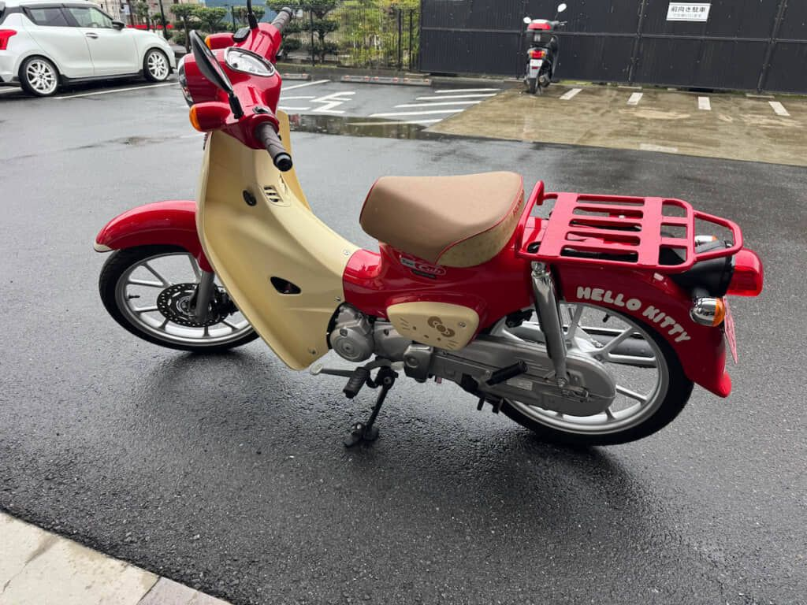
「Fallout Shelter」に赤ちゃんデスクローが登場。「Fallout 4」は脱出ゲーム風ダンジョンや海底コズミックホラーなど3つの新Creationsを発表
https://
4gamer.net/s/G030407.2610
21007
…
「Fallout Shelter」では今週，毎日のログインで無料アイテムを配布。ゲーム内ストアでは割引キャンペーンも実施
任天堂、「パッケージ版の販売は廃止しない」と明言。ただしSwitch 2に限る？

任天堂、「パッケージ版の販売は廃止しない」と明言。ただしSwitch 2に限る？ | ギズモード・ジャパン
私が忘れていたおせち予約開始日をオトンがちゃんと覚えていてくれたので無事に予約完了しました。つむつむ（ミリオンライブ）洋風おせちを食べます。
ポン☆潤々さんがリポスト
･･━━･･━━･･━━･･━━･･
#アニサマ
オフィシャルインスタグラム開設
https://
instagram.com/anisama_offici
al/
…
･･━━･･━━･･━━･･━━･･
本日より、instagram のアニサマオフィシャルアカウントを開設いたしました！
【instagram @ anisama_official】
今後は instagram
さらに表示 (元の投稿を開く)
人間は邪魔でち…
女王候補の私室や森の湖が渋谷に出現！
https://
4gamer.net/s/G052080.2610
16002
…
「アンジェリーク」30周年を記念した特別展示会をレポート。歴代守護聖様の等身大パネルや初公開資料などとともに，シリーズ30年の歩みを振り返ります
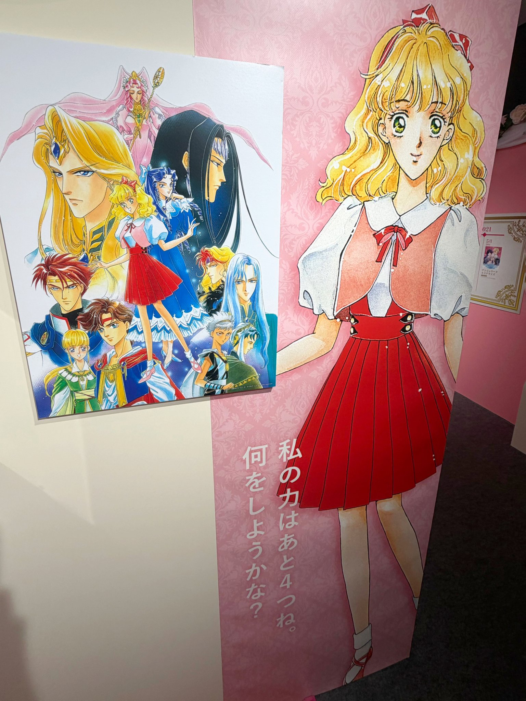
ITmedia NEWSさんがリポスト
AI利用のペネトレーションテストツール「ARTEX」を使用した攻撃、日本企業20社を標的に 同一グループが複数犯行か 対策のポイントは GMO系列調査
AI利用のペネトレーションテストツール「ARTEX」を使用した攻撃、日本企業20社を標的に 同一グループが複数犯行か 対策のポイントは GMO系列調査
ポン☆潤々さんがリポスト
･･━━･･━━･･━━･･━━･･
11/4(水)19:00～
ANISAMA FUKUOKA 2027
開催発表会放送決定！
https://
live.nicovideo.jp/watch/lv351586
685
…
#アニサマ #アニサマ福岡
･･━━･･━━･･━━･･━━･･
大変お待たせしました！
11/4(水)19時より、ANISAMA FUKUOKA 2027 の開催発表会を放送いたします！
さらに表示 (元の投稿を開く)

総集編イベント
初心者応援 Vivid BAD SQUAD Memories
グローアップギフトガチャ開催
Vivid BAD SQUADのメンバーのみ出現
★4メンバーが必ず一人出現するほか、豪華な育成アイテムがついてきます
※「有償クリスタル×3000」で1人1回まで引くことができます
#プロセカ #ビビバス

デファレンシャルギアなしのホイールの直接ドライブ。そのトルクだと機械部品の設計がめんどくさい？車の部品会社から調達困難？自分で設定するしかない、めんどくさい、システム構成で直接、とかなのかな。
はい、私のツイートにおける「オタク」は「尊厳の複数」です。
総集編イベント
Vivid BAD SQUAD Memories
育成応援プライズガチャ開催
Vivid BAD SQUADのメンバーのみ出現し、
ガチャを1回引くごとにプライズがもらえます
#プロセカ #ビビバス

▼公式映像

総集編イベント
Vivid BAD SQUAD Memoriesガチャ開催
Vivid BAD SQUADのメンバーのみ出現し、
期間限定を含むイベントバナー★4メンバーの出現率がアップします
※期間限定メンバーは再登場する可能性があります
#プロセカ #ビビバス
大作感のある怪異都市オープンワールドRPG『人間奇想計画』発表！人類と「フシギ」が共生する街で巻き起こる事件を解決、事前登録も開始。テンセント系スタジオが開発
https://
gamespark.jp/article/2026/1
0/21/173879.html?utm_source=twitter&utm_medium=social&utm_content=tweet
…
・人類と「フシギ」が共生する街「エリシアン」を舞台とするオープンワールドスタイルのアクションRPG
さらに表示 (元の投稿を開く)


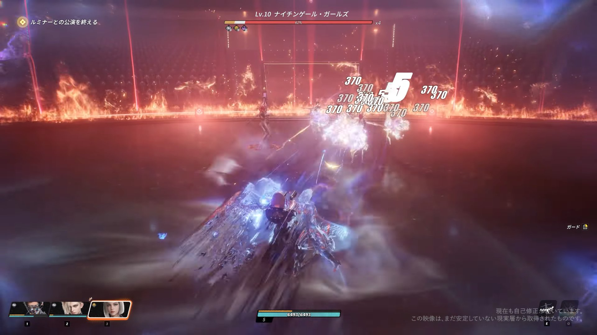
総集編イベント
Vivid BAD SQUAD Memories
開催記念スタンプミッション
ミッションをクリアしてスタンプを集めると、「[Vivid BAD SQUAD]★4メンバー確定ガチャチケット」などが獲得できます
#プロセカ #ビビバス
総集編イベント
Vivid BAD SQUAD Memories
開催記念ログインキャンペーン
期間中、毎日「Vivid BAD SQUAD Memoriesガチャ専用チケット×5」をプレゼント
#プロセカ #ビビバス

AIに200万円渡してネットショップを1年運営させてみた──Alibabaの研究者らがシミュレーション 資産14倍の例も

AIに200万円渡してネットショップを1年運営させてみた──Alibabaの研究者らがシミュレーション 資産14倍の例も
人に注射を打てる「サイボーグゴキブリ」の群れが、がれき下の被災者を救助？ 実験成功率72％

人に注射を打てる「サイボーグゴキブリ」の群れが、がれき下の被災者を救助？ 実験成功率72％
サイン本3冊セットを3名様に抽選でプレゼント！
プレゼントキャンペーン実施中
サイン本はこちらの3作品
『死亡エンドを回避したギャルゲーのヒロインたちが俺の【日記帳】を読んで秘密を知ったらしい』
『俺のことを死んだと勘違いしていた幼なじみの愛が重すぎる』
さらに表示 (元の投稿を開く)


iPhone Duoのケース、今までGalaxy Foldでいろんなケースを試した経験上で言うと
・フロントはガラスフィルム
・裏は薄いアラミドケース
・ヒンジはノーガード
・落とした時はお祈り
・当たりどころ悪ければ保証
これが普段の使い勝手も両立したベストなバランス
番組冒頭では
「ボカロミュージックのセカイ」をお届け
ゲストのボカロPと一緒に、最新のVOCALOID楽曲の紹介や、書き下ろし楽曲についてお話しするコーナーです
今回は清水藍さん、本泉莉奈さん、ユジーさんが登場ぜひご覧ください
#プロセカ

ギズモード・ジャパン（公式）さんがリポスト
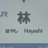
ロックマンのボスに、いたよね？
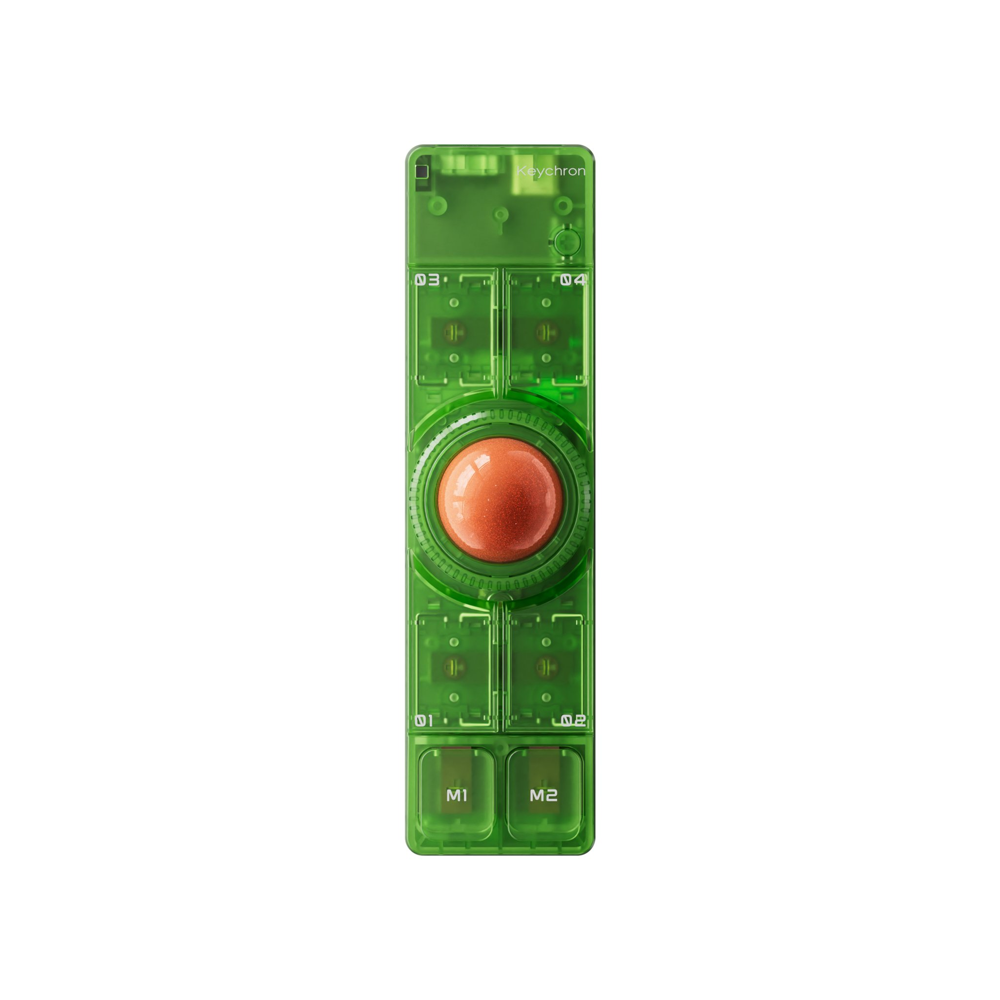
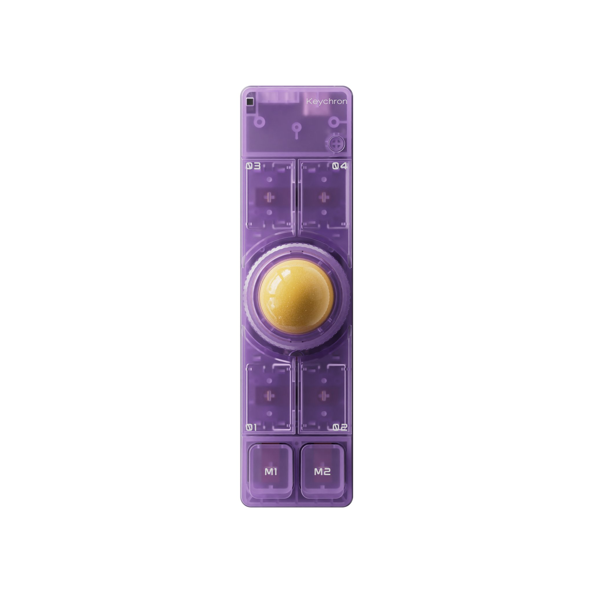
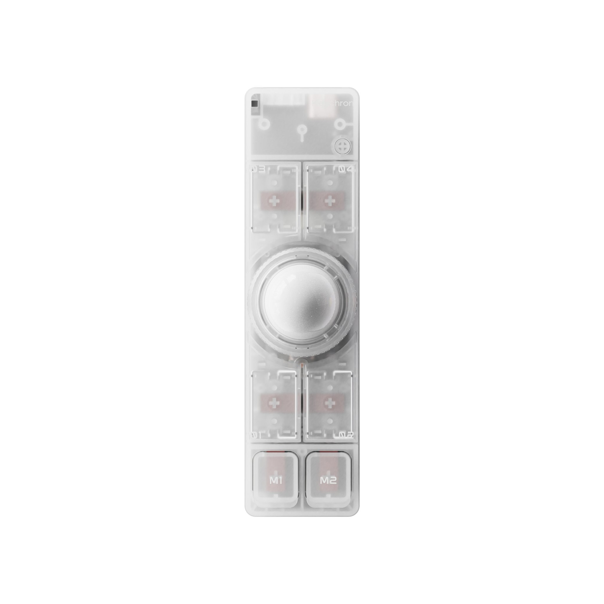
ギズモード・ジャパン（公式）
@gizmodojapan
・Bio Green（バイオグリーン）
・Eclipse Purple（エクリプスパープル）
・Hollow White（ホロウホワイト）
php2shell、急いでCodexにうちが運営してるWPサイトを一時隔離してもらった……
10月28日（水）19:30より
『プロセカ放送局 #37』の生配信が決定！
中島由貴さん、吉岡茉祐さん、本泉莉奈さん、鷲見友美ジェナさんが出演ぜひご覧ください
YouTube Live：
https://
youtube.com/live/5MqbGPOzb
QM
…
ニコ生：
https://
live.nicovideo.jp/watch/lv351503
027
…
#プロセカ

もっとカラフルに、もっとビビッドに。カラー電子ペーパーディスプレイ「Kaleido 4」発表

もっとカラフルに、もっとビビッドに。カラー電子ペーパーディスプレイ「Kaleido 4」発表 | ギズモード・ジャパン
無料で使えるAI｢ローカルLLM｣の進化がすごいよって話

無料で使えるAI｢ローカルLLM｣の進化がすごいよって話 | ギズモード・ジャパン
Nape Pro SEの先行販売は明日10/22 19時〜

「Nape Pro SE」ホームポジションに個性を宿すトラックボール ｜ CoSTORY
・Bio Green（バイオグリーン）
・Eclipse Purple（エクリプスパープル）
・Hollow White（ホロウホワイト）
Torishima / INTPさんがリポスト
どうやらPHP RCEの詳細が早く漏洩したようです。php.iniで `session.upload_progress.enabled = Off` にして軽減してください：
https://
jackalsyn.com/posts/php-up-2
026.html
…
【物議】妻に「○○して」と頼むのはモラハラらしいぞ・・・ #雑談・その他の話
【物議】妻に「○○して」と頼むのはモラハラらしいぞ・・・ - オレ的ゲーム速報@刃の記事ページ
jin115.com
Torishima / INTPさんがリポスト
え、、、、
honto - 外部委託先への不正アクセスによるお客様情報漏洩えいの可能性について - hontoからのお知らせ一覧
https://
honto.jp/info/detail_04
1000135344.html
…
日経平均株価、一時6万5000円台回復 ソフトバンクＧが占う反発力
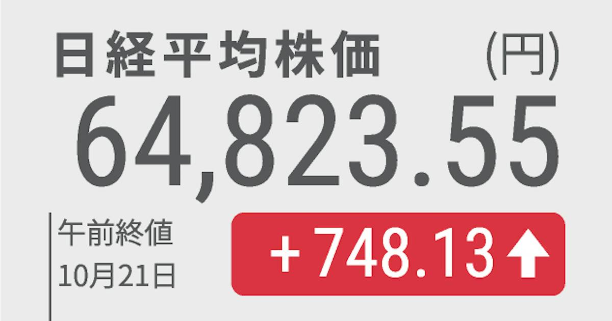
日経平均株価、一時6万5000円台回復 ソフトバンクGが占う反発力
「火に焼かれない」サラマンダー、実は毒の粘液が蛍光に光る
https://
nikkei.com/article/DGXZQO
SG0787U0X01C26A0000000/?n_cid=SNSTW005&n_tw=1792540031
…
火に強いというのはただの伝説ですが、腹部などの粘液に紫外線を当てると光ることがわかりました。捕食者を威嚇したり、繁殖相手を引きつけたりしている可能性があります。

「火に焼かれない」サラマンダー、実は毒の粘液が蛍光に光る
「週刊VTuberファイル」File.142：木乃華サクヤ【ユニバースプロダクション】
https://
4gamer.net/s/G101138.2610
17007
…
「週刊VTuberファイル」では，さまざまなシーンで活躍するVTuberを毎回1人フィーチャーし，その魅力を紹介していきます
Torishima / INTPさんがリポスト
✦・┈┈┈┈┈┈ ┈┈┈┈┈┈・✦
『性別「モナリザ」の君へ。』
メインビジュアル第1弾解禁
2027年放送決定
✦・┈┈┈┈┈┈ ┈┈┈┈┈┈・✦
メインPV第1弾も解禁！
https://
youtu.be/JLp9WW4Evvg
#モナリザアニメ

「God knows...」カバーで話題の「NTE」，明音凛（CV：長谷川育美）のバンド編まで今から始めて何時間かかる？【PR】
https://
4gamer.net/s/G081722.2610
14064
…
MyGO!!!!!の「迷星叫」を歌うバンド前編へ，新規アカウント＆会話スキップなしで検証。約半年でぐっと遊びやすくなった序盤の歩き方
チキンかあさん煮定食を「おかあさん」と呼ぶ店員
大戸屋の店員「お待たせしました。おかあさんです」→運んできたものに「声出して笑った」
https://
nlab.itmedia.co.jp/cont/articles/
4053804/
…
すでに開発陣の想定外なゲームになった。「デッドアカウント〜二つの蒼い炎〜」は逃げるのではない，攻めるサバイバー［インタビュー］
https://
4gamer.net/s/G095270.2610
02023
…
TGSで1400万点を出しちゃった人。言われてるぞ
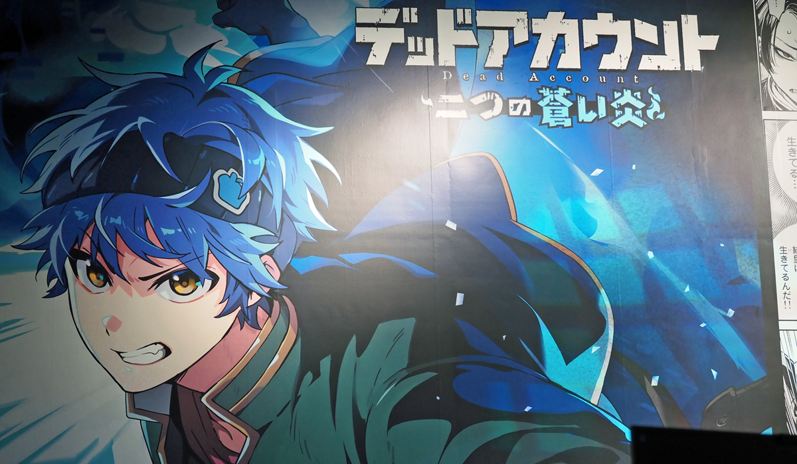
ユウマボウズさんがリポスト
━━━カウントダウン━━━
劇場版 前橋ウィッチーズ
～魔女見習いのエモエモリーズ～
公開まで あと 2 日
━━━━━━━━━━━━━━━━━
https://
maebashi-witches.com
#まじょえも
#前橋ウィッチーズ

25時、ナイトコードで。 13th Single
「その絵の名前は/幸福刑」本日発売
本日10月21日（水）リリースですぜひお聴き下さい
詳細はこちら
https://
bushiroad-music.com/musics/brmm-11
039/
…
#プロセカ
「楽園追放」公式さんがリポスト
#楽園追放 心のレゾナンス
11月13日㊎劇場公開
兵庫県でも上映予定です！
https://
toei-screeninginfo.azurewebsites.net/theaterlist/02
992
…
アニメイトでもムビチケ好評販売中！
https://
animate-ticket.com/events/74?utm_
source=x_other&utm_medium=social&utm_campaign=x_other_74
…
この秋ぜひ劇場へ！

ポン☆潤々さんがリポスト
◇━━━━━━━━━━━━━━━◇
TVアニメ『#魔法騎士レイアース』
第3話は本日深夜0時00分～放送
◇━━━━━━━━━━━━━━━◇
テレビ朝日系全国ネット
“IMAnimation W”枠にて放送開始
＊一部地域を除く
＊通常放送より15分遅れでの放送となります
#MagicKnightRayearth

トウカイのクマさんがリポスト
【web4コマ漫画更新！】
第661話 『猫』を公開しました～！
今回は「斑鳩 ルカ」さんのお話です！
皆さんぜひご覧ください！！
#シャニマス #idolmaster

スペースXとテスラ、「マスク帝国」へ統合協議 AI軸に宇宙とEV融合
スペースXとテスラ、「マスク帝国」へ統合協議 AI軸に宇宙とEV融合
AIの未来、使いたい人だけで決めていいの？男女間で大きな温度差
AIの未来、使いたい人だけで決めていいの？男女間で大きな温度差 | ギズモード・ジャパン
京急鶴見の近辺、渋い店とヤバい人が多くて楽しい。蒲田川崎鶴見の治安三兄弟で仲良くしようね。
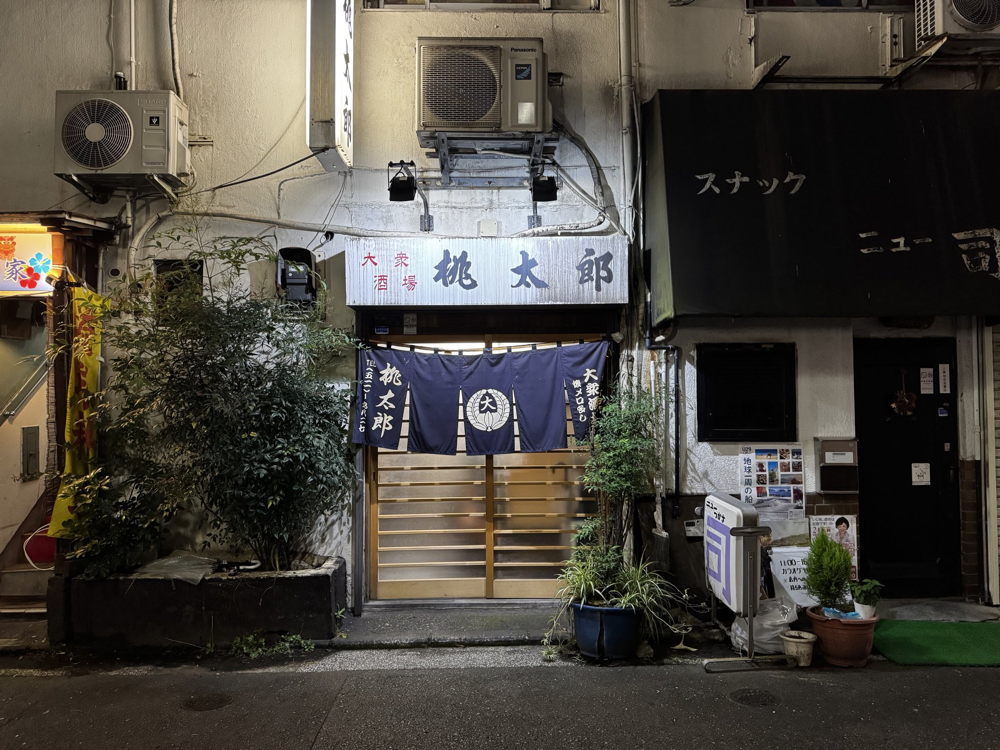
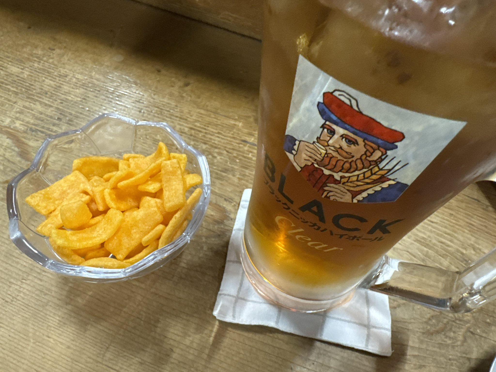
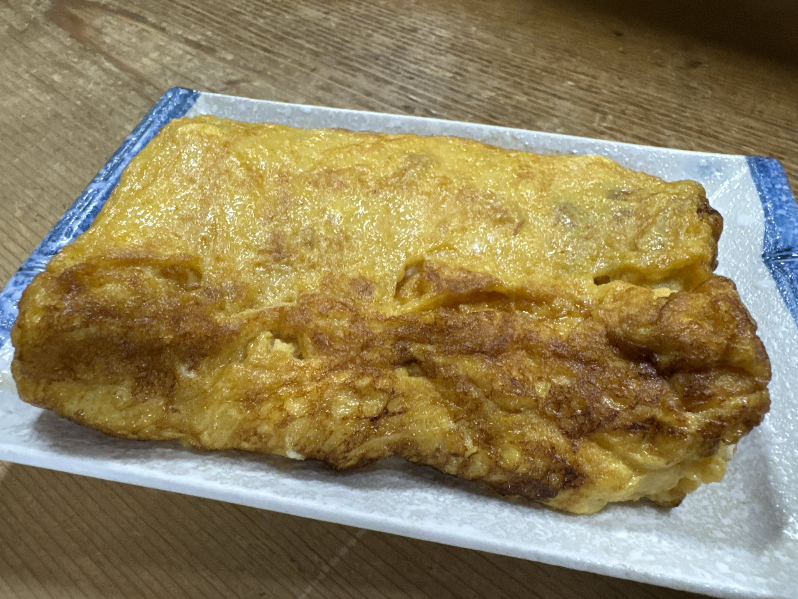
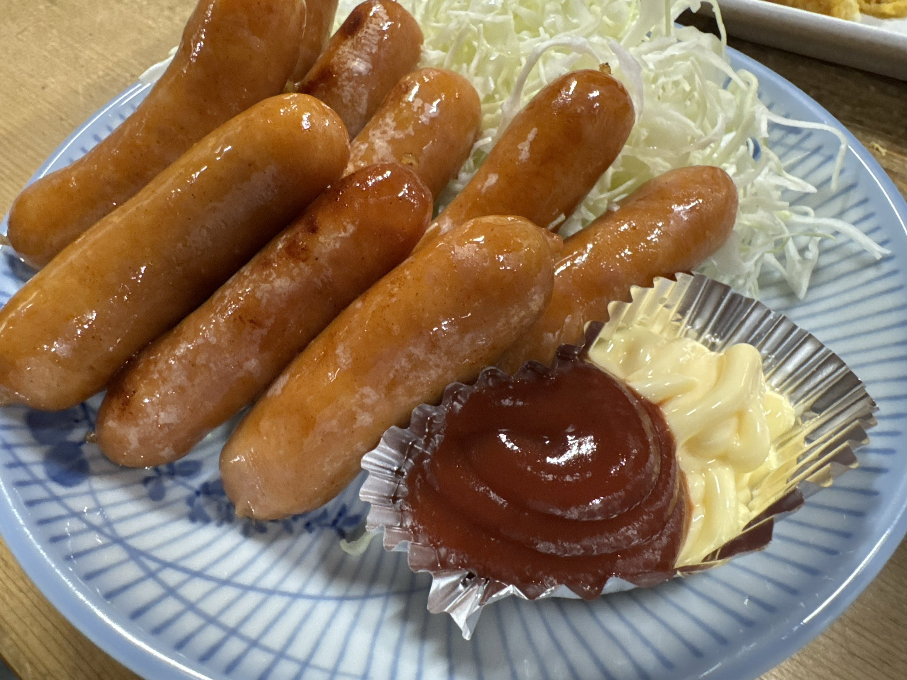
Llmも、バックエンドはコードを読むけど、フロントエンドはまず読まない。フロントエンドに責任のある処理は置かないから、みたいな話も、もうコードは読まない、みたいな雑な話に縮退するのかしらん。
「Chronoscript: The Endless End」，XBOX Series X|S版のリリースが決定
https://
4gamer.net/s/G105152.2610
21005
…
・発表済みのPC，PS5に加えて，XBOX Series X|Sでも楽しめるように
・リリース時期は2027年初夏の予定
・Steamで配信中の体験版もアップデート
Torishima / INTPさんがリポスト
今日、世界中のPHPerは大メンテ選手権だと思うけど、23:00(JST)にメンテ対応をする人たちはslack以外の連絡手段を事前に決めて用意しておいた方がいいと思うよ。
slackもphpだから同じ時間にメンテ入る可能性ある。
すぐ終わるとは思うけど、初動で焦らないためにも。

Slack | AI 活用型の仕事用プラットフォーム＆生産性ツール
【話題】Vtuberさん、チン凸被害を訴える
■ラプラス・ダークネス
・ホロライブ所属、YouTubeチャンネル登録者158万人の大手女性Vtuber
・「身内と下ネタで盛り上がることがあるが、なんの関係値もない視聴者からのセクハラはキモいから辞めて」と苦言を呈して炎上
→事務所が“チン凸被害”を公表
さらに表示 (元の投稿を開く)
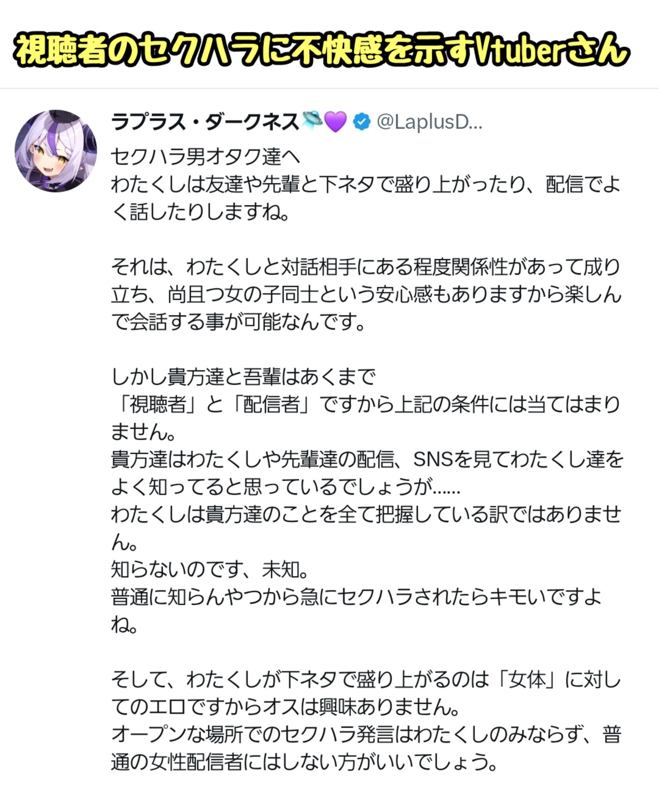
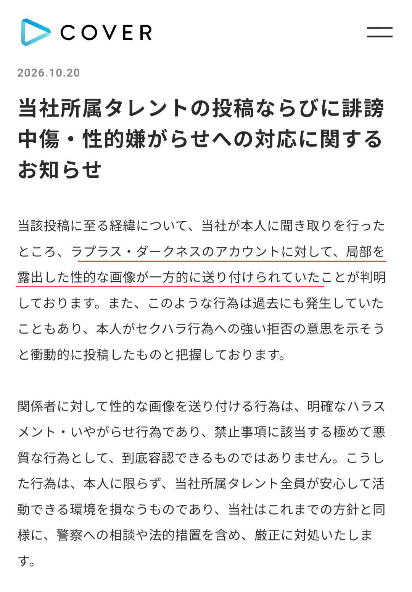
百貨店員が全国「武者修行」 名古屋高島屋、新人自ら研修を企画
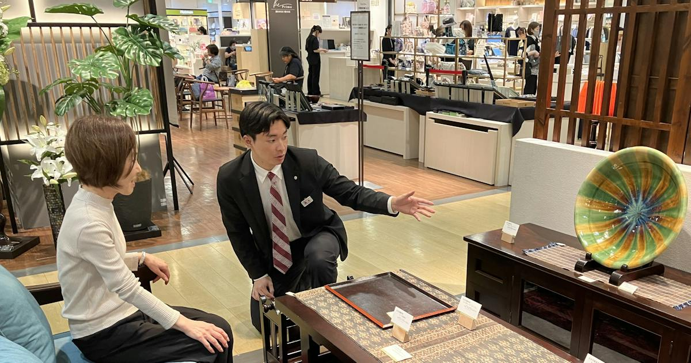
百貨店員が全国「武者修行」 名古屋高島屋、新人自ら研修を企画
SIM入りイヤホン、あの会議文字起こしのPlaudから出るみたい。
Plaudアプリ自体もいつのまにかChatGPTみたいな感じにリニューアルされてスキルとかコネクタに対応して、イメージしてた働き方がガチで実現するっぽい
Plaud One
https://
japan.cnet.com/article/352520
19/
…
ゆーじ
@yuujii
マジで新しい働き方だわwww
dotと会話するのにグラス掛けるのはアリだな！！！！でもイヤホンでもいいのか？？
SIM入りイヤホン欲しいなー x.com/yuujii/status/…
雪之丞さんさんがリポスト
／
#原神Verꓸ7ꓸ1 リリース記念
キャンペーン！第5弾
＼
10月27日(火)23:59まで毎日参加可能！
1万円分ギフトカードがその場で当たるチャンス！
参加方法：
①
@Genshin_7
をフォロー
②本投稿をリポスト
#原神CP
↓ 動画をタップして結果を確認！

2:36
牛肉輸入、豪州産への依存が5割超え 米国産減り調達先拡大が課題に
牛肉輸入、豪州産への依存が5割超え 米国産減り調達先拡大が課題に
マイセカイに新たな家具を追加しました
「音楽ホールシリーズ」を追加（14種）
「「ハロウィン」家具」を追加（5種）
「ハロウィン」家具の設計図は11月1日23時59分までにログインしてお受け取りください
※詳細はお知らせをご確認ください
#プロセカ
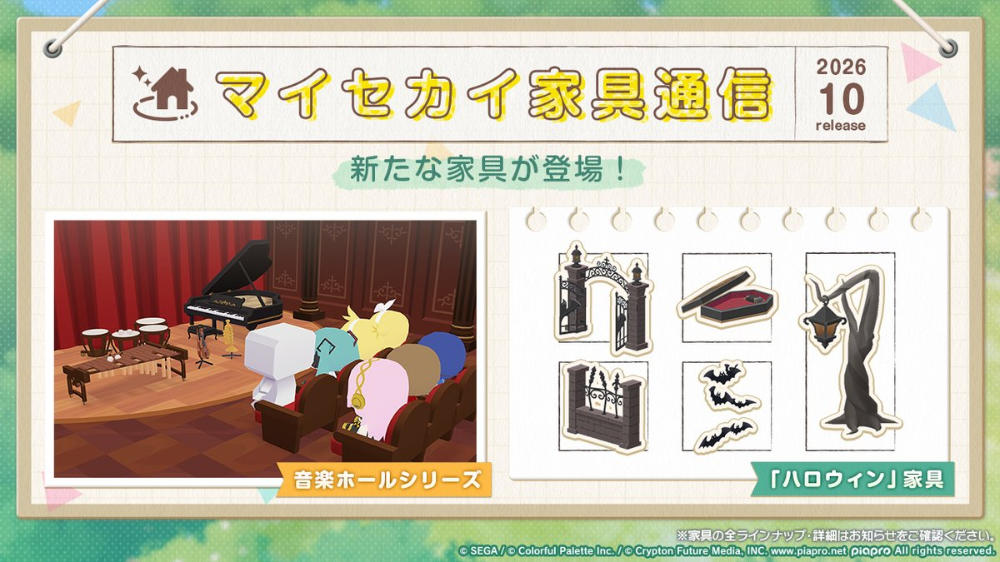
「ドレミファロンド」
難易度APPENDを追加
※詳細はお知らせをご確認ください
#プロセカ
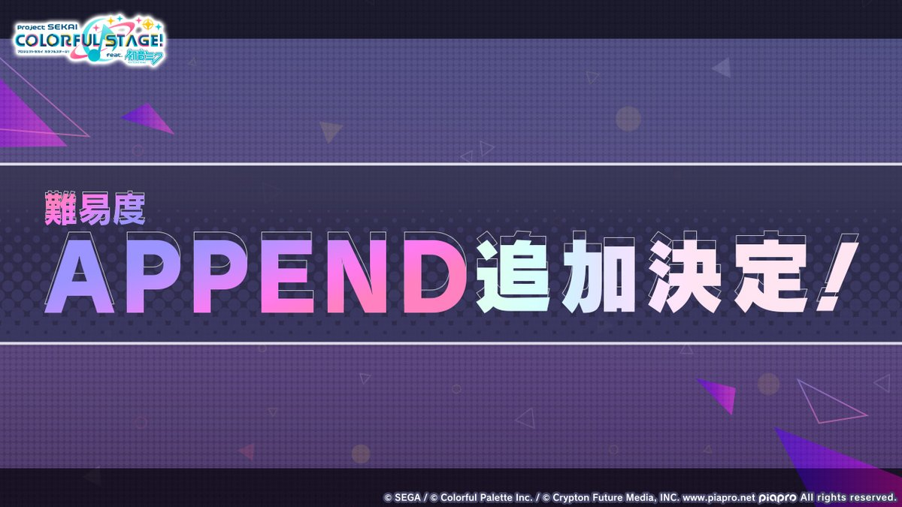
下記楽曲のアナザーボーカルver.を追加
「三日月ステップ」
小豆沢こはね
白石杏
「カラフルファンデーション」
桃井愛莉
KAITO
※詳細はお知らせをご確認ください
#プロセカ
Torishima / INTPさんがリポスト
【v7.1.0アップデートのお知らせ】
メンテナンスと強制アップデートにご協力いただいたお礼として、
10月31日18時より「ライブボーナスドリンク（大）×3」をプレゼントいたします
※詳細はお知らせをご確認ください
#プロセカ
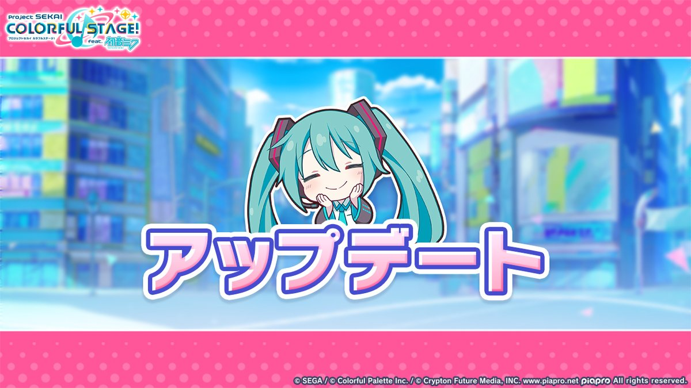
Torishima / INTPさんがリポスト
PHP脆弱性の続報。出典は出しませんが情報が正しければ、暫定対策は php.ini で session.upload_progress.enabled = Off です。PHPのアップロード進捗機能を使っている場合だけ影響が出ます。ただ、攻撃はアップロード機能があるかどうかは関係ないので早急に対策必要です。管理者の方頑張りましょう。
【メンテナンス完了のお知らせ】
本日8:30より実施していた、v7.1.0アップデートのためのメンテナンスが完了しました。
※通信環境の良い場所にてアップデートを行ってください
※詳細はお知らせをご確認ください
#プロセカ
ソニーＦＧ株価が３日続落 「金融庁が立ち入り検査検討」報道
ソニーFG株価が3日続落 「金融庁が立ち入り検査検討」報道
Haruhiko Okumuraさんがリポスト
2026年度情報処理学会関西支部支部大会
萩谷昌己先生（東京大学名誉教授、情報処理学会会長）
「初中等教育におけるAIの活用とプログラミング教育の展開」の特別講演が行われました。
https://
jnsg.jp/?p=7523#more-7
523
…
情報入試についての重要な講演です。
資料（PDF）掲載しました。
https://
jnsg.jp/wp-content/upl
oads/2026/09/hagiya-20260927.pdf
…

2026年度情報処理学会関西支部支部大会において 萩谷昌己先生（東京大学名誉教授、情報処理学会会長）による 「初中等教育におけるAIの活用とプログラミング教育の展開」 の特別講演があります。 オンラインで聴講できます（聴…
jnsg.jp
末期癌患者「ファッ！？２０００万円落ちてるやんけ！」お前らはこの２０００万円使い切る？
末期癌患者「ファッ！？２０００万円落ちてるやんけ！」お前らはこの２０００万円使い切る？ : ハムスター速報
豆腐のみなさん！ココスのアプリ入れてマイレージ貯めましょう！
アクスタ購入でも貯まります！！
15000円分買ったら料理の無料クーポンが4つ貰えます！！
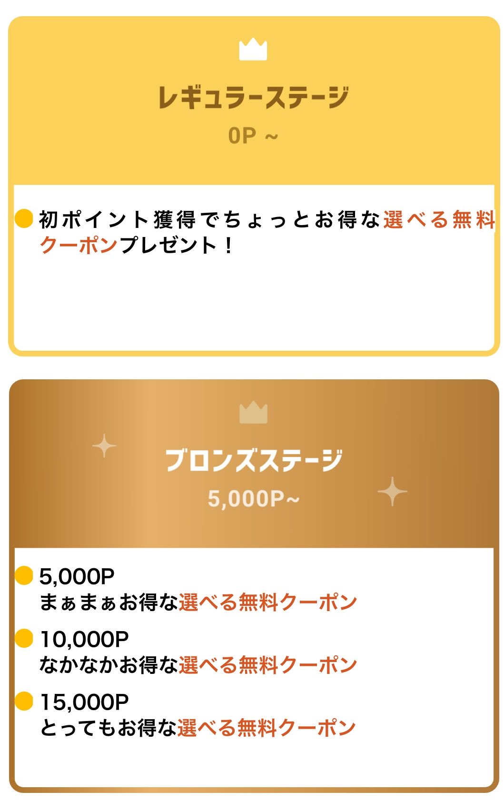
100万体のゾンビVS空母機動部隊！RTS『Ebbtide』のインパクトがすごい。ドット絵ゾンビが壁を登ってきてヘリやミサイルで撃退―人々は「世界キャンペーン」の戦力へ
https://
gamespark.jp/article/2026/1
0/21/173878.html?utm_source=twitter&utm_medium=social&utm_content=tweet
…
・ゾンビだらけのロスに部隊を投入、生存者を救出
・助けた人員は世界各地のゾンビ災害地域へ派遣
Torishima / INTPさんがリポスト
流石にこれはサーバー業者やプロバイダーはLinux脆弱性と合わせて一斉対応するはずです。世界中のレガシーサイトがほぼ全部対象なんで流石にやばい。
Torishima / INTP
@izutorishima
PHPコアの脆弱性とか流石に嘘だろ
Llmがある現在、ソフト資産の価格は何桁も下がり、スマホのアプリ基盤で十分提供できるなにか、利用者の振る舞いにより経費や手間や責任が大きく、汎用のサービスで月額千円？となるものは、資源はそこにある自分で使え、が通るかな、通りそう？
さたけさんがリポスト
【速報】東京・八王子で30℃に到達 関東で統計史上一番遅い真夏日に 気象庁
世界各地の速報ニュースをリアルタイムでお届け。テレ朝NEWSでは政治・経済・社会・国際からスポーツ・エンタメまで、わかりやすい解説とともに最新ニュースをお届け。速報やライブ配信も今すぐチェック。
news.tv-asahi.co.jp
今なら、いわゆる孤独死が発生した場合の対処のシステム、作れるなと。スマートロックで解除、生きてるかの活動検出からのsnsなり警察への連絡。サービスはめんどくさいとして、オープンソースでワンクリックインストールで自分の責任で使え、的な。
現状、IT系のかなりの部分の開発で外部委託が急速に縮小されて行ってるから、会社の独自IPやプロダクトを持ってないと相当厳しいことになりそう
【特大悲報】台風30号、今年最も気圧が低い900hPaで日本に接近中／(^o^)＼ #雑談・その他の話
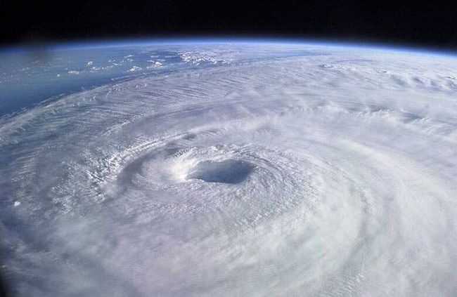
【特大悲報】台風30号、今年最も気圧が低い900hPaで日本に接近中／(^o^)＼ - オレ的ゲーム速報@刃の記事ページ
jin115.com
生キャラメル、特徴知って手作りに挑戦 水あめが口溶けの秘密
https://
nikkei.com/article/DGXZQO
UD289MV0Y6A920C2000000/?n_cid=SNSTW005&n_tw=1792502382
…
砂糖だけだと結晶ができ、シャリシャリしやすくなります。水あめは結晶化を抑え、なめらかな食感に。なければハチミツでも代用できます。
生キャラメル、特徴知って手作りに挑戦 水あめが口溶けの秘密
普段からココスを利用している為10%オフ
Slackにバカのハッピーセットって書き込みそうになったのでローカルllmに僕の発言を書き込んで適切な形社会性の形にパースしてくれるワークフローを作った（アンガーマネージメント）
Torishima / INTPさんがリポスト
正直、ADHDは基礎をコツコツ学ぶなんてことは無理です。
ADHDは、とりあえず応用をやってみて、これは一旦基礎をやらないと無理だ！と必要にかられてから過集中で基礎を総ざらいするのが正解です。
発達交流広場
@hattatsukoryu
基礎をすっ飛ばして応用したくなるのもADHDの特性らしいです。
みなさんは、そんな事ありませんか？
スタンプ獲得しました。
ここから末広町駅まで向かいます。
しかし、なぜ秋葉原や末広町は対象なのに、御茶ノ水は対象外なのか…
池袋からメトロで一番近いのは御茶ノ水なのにね…
#バンドリ
#映画ムジカ
#AveMujica

ユウマボウズ
@Gc5RLsVaaV12052
おそようございます。
今日も休みなので、いろいろ回ります。
まずはBanG Dream!Storeでスタンプラリー連動キャンペーンに参加です。
#バンドリ
#AveMujica
Torishima / INTPさんがリポスト
【要対応】本日夜パッチ開示の php2shell（PHPシステム全般の、任意コード実行脆弱性）につき、ブログ出しました。調査の都度アプデします。僕のX か
@flatt_security
で更新告知するので、都度ご確認ください。。。
PHPの重大な脆弱性「php2shell」（CVE-2026-109618、CVE-2026-109619）の概要と対応指針 - GMO Flatt Security Blog
ココスコラボ初日
・一般客を装うも、注文端末から包み焼きハンバーグを注文しようとした瞬間ビビミクの声が響き渡る
・周りの客がみんなコラボ目当てで、ぬいとかアクスタとか持参してた
・アクスタはルカだけ購入。ちなみにまふゆだけ売り切れ。ちなみにアクスタはココス年間パスポートの割引対象外
とりしま (Sub I/O)さんがリポスト
超かぐや姫に限らず、長期の予定をオープンにしないのが映画の文化なのかもしれないけど、作品と長く付き合いたいから「ロードマップ」みたいな長期的な見通し欲しいよ。
毎回「もう終わっちゃうかも」って思いながら映画館行くの、感情ジェットコースター過ぎてつらいよ。
家庭用ゲーム機というよりスペック固定仕様のゲーミングPCだものね。
GIGAZINE(ギガジン)
@gigazine
次世代XBOXの価格は最大28万円超というトンデモ高価格になり2028年に発売されるとの報道
多っっっ！ 来年のサムスンは折りたたみスマホを6モデル準備中!?
多っっっ！ 来年のサムスンは折りたたみスマホを6モデル準備中!? | ギズモード・ジャパン
色付きレンズでも5分で慣れる。寝る前1〜2時間に掛ける「ナイトグラス」 BuyPR
色付きレンズでも5分で慣れる。寝る前1〜2時間に掛ける「ナイトグラス」 | ギズモード・ジャパン
iPhone Dooのバッテリーは、他社の折りたたみスマホよりは大きい（から大丈夫よね？）
iPhone Dooのバッテリーは、他社の折りたたみスマホよりは大きい（から大丈夫よね？） | ギズモード・ジャパン
もはやプレイヤーに対する嫌がらせですわ。
さとっち
@30calclub
「プレイヤーの場合は搭乗する機種によって搭載数は異なるが多くても8回程度となっている。対して影22部隊は搭載数に上限がなかった」狂ってんのかバンナム…。
Torishima / INTPさんがリポスト
【要対応】PHP システム多数で被害が出うる脆弱性「php2shell」の修正パッチが、本日10/21 23時（日本時間）にリリースされる見込みです。
以下にて、弊社調査の現況や、現時点で考えうる緩和策・備えを整理しました。ご一読の上、対応にお役立てください。
▼ 詳細
PHPの重大な脆弱性「php2shell」（CVE-2026-109618、CVE-2026-109619）の概要と対応指針 - GMO Flatt Security Blog
マイネームイズさんがリポスト
は？
（´・ω・`）.;:…（´・ω…:.;::..（´・;::: .:.;: ｻﾗｻﾗ..
セレナさんのデントリペア作業中。ライト当てたら縦に5cm以上、完璧なドアパンチだった。この高さに当たるドアって車種はなんだ？今回の費用は2万円越え。ぶつけた奴呪っておく。逝くよろし！
Torishima / INTPさんがリポスト
ぶっちゃけるとアップデートを累積にするのは良いが、脆弱性を塞ぐと見せかけて新機能を混ぜて現場を混乱させる様なことをしてるMicrosoftさんにも非がある。それは半年に一度って最初説明していただろ！！
Cubbit
@cubbit2
せやな……
人類は愚か
ウィンドウズアップデートについて調べたらめちゃめちゃ面白かった
https://
anond.hatelabo.jp/20261020173628
『紅の砂漠』DLC「未知なる旅路」プレビュー映像！建造した船で敵対勢力とも出くわす大海原へ。結婚やお店経営、城の装飾変更などファイウェルの暮らしもさらに充実
https://
gamespark.jp/article/2026/1
0/21/173877.html?utm_source=twitter&utm_medium=social&utm_content=tweet
…
「未知なる旅路」は10月30日リリース予定。本DLCのシステムなどを紹介するプレビュー映像が公開されました
今日の鳥は、岸に近い。
お薬手帳のアプリを入れたら、ドラッグストアに調剤の導線が出てきた。そりゃそうだ、なんだけど、手帳のデータと購買は分離しときたいなぁ、と思うが、薬剤へのコメントをするならすべての情報はそこにないとできないしと思うと、
調剤とアドバイスが不可分サービスしかも公費とか歪？
フジテレビに不正アクセス、メディア関係者の個人情報最大730件漏えいか 番組宣伝システムが被害
フジテレビに不正アクセス、メディア関係者の個人情報最大730件漏えいか 番組宣伝システムが被害
トヨタに追われるGM、最後発のHV参入 燃料高で戦略転換の難路
トヨタに追われるGM、最後発のHV参入 燃料高で戦略転換の難路
おそようございます。
今日も休みなので、いろいろ回ります。
まずはBanG Dream!Storeでスタンプラリー連動キャンペーンに参加です。
#バンドリ
#AveMujica
米政府機関、中国DeepSeekのAI製品を使用禁止
米政府機関、中国DeepSeekのAI製品を使用禁止 | ギズモード・ジャパン
ココスのドリンクバー、ミルクにキャラメル入れて、そこにアップルティーを注ぐのが好きです
記事はこちら
曲を作りたくなる、この横長。CORSAIRの14.5インチ画面をDTMデスクに迎えた | ギズモード・ジャパン
2560×720pxの横長画面に、Ableton Liveのタイムラインを。
CORSAIRの14.5インチ「XENEON EDGE」をDTMデスクに追加しました。横方向に時間が流れる制作画面が収まり、文字も思ったより読める。
細かな操作や長時間の使い勝手はこれから。まずは設置して感じたことをギズモードに書きました。
さらに表示 (元の投稿を開く)
東大、終わる・・・「選考過程の検証をしないと国としては学長を任命できない」 #政治
東大、終わる・・・「選考過程の検証をしないと国としては学長を任命できない」 - オレ的ゲーム速報@刃の記事ページ
jin115.com
企業への不正アクセス、侵入経路は4つ
https://
nikkei.com/article/DGXZQO
UC203F40Q6A021C2000000/?n_cid=SNSTW005&n_tw=1792538598
…
被害が増えているのが、ウェブサイトやアプリなど正規の経路を悪用して顧客データにアクセスするパターン。ソースネクストや「焼肉きんぐ」などが該当します。他にも3つのパターンがあります。

企業への不正アクセス、4つの侵入経路 アプリ経由や管理者乗っ取り
自由すぎラーメンシム『Japanese Ramen Simulator』ゲーム内に未実装の「射撃場」をユーザーが作成。熱いラーメンを“投擲”するダイナミック配膳
https://
gamespark.jp/article/2026/1
0/21/173876.html?utm_source=twitter&utm_medium=social&utm_content=tweet
…
ポン☆潤々さんがリポスト
#ドラスタ池袋 スタッフ募集
現在年内オープンの新店・既存店スタッフを募集しております
カードゲームが好きな方や接客が好きな方でも大歓迎
未経験者も大歓迎です
ご応募お待ちしております
詳細は下記のURLをチェック
https://
baitoru.com/jobdetail/1658
18809
…
#求人募集 #池袋
【ドラゴンスター 池袋店】のアルバイト・パートの求人情報なら【バイトル】。【東京都豊島区】の【池袋駅】の【イベントスタッフ】、【レジ打ち】、【仕分け・シール貼り】の仕事です。バイトの応募にはぜひ【バイトル】をご利用ください
baitoru.com
オービック株価が続伸 「４〜９月営業益最高、26年連続」報道
オービック株価が続伸 「4〜9月営業益最高、26年連続」報道
アドバンテスト株価、一時５％高 米スペースＸの決算受け懸念後退
アドバンテスト株価、一時5%高 米スペースXの決算受け懸念後退
「ゲッP-X」ダウンロード版が初セール。Steam/PS5/Switch/PS4版が30％オフ，11月4日まで
https://
4gamer.net/s/G098670.2610
21001
…
・1999年発売のカルト作を現代向けに復刻
・約8000枚の手描き原画を使用したロボットアニメ風STG
・パッケージ版とXBOX Series X|S/Microsoft Store版は対象外
「楽園追放」公式さんがリポスト
#楽園追放 心のレゾナンス
11月13日㊎劇場公開
兵庫県でも上映予定です！
https://
toei-screeninginfo.azurewebsites.net/theaterlist/02
992
…
アニメイトでもムビチケ好評販売中！
https://
animate-ticket.com/events/74?utm_
source=x_other&utm_medium=social&utm_campaign=x_other_74
…
この秋ぜひ劇場へ！

雷鳥の里って美味しいけれど急に人気爆発するタイプのお菓子では無くないか…？(有料記事なので理由が分からない)
少ない…？まずその根拠を←
もとい、すみません批判的な意図はなく、むしろ、少なくとも京アニ作品の中では多い方かと思います。いわゆる美少女キャラがメインとなるアニメの中でも(ユーフォを「美少女アニメ」と言うのは違和感がある)。
pianonaiq
@PIANONAIQ
ユーフォのファン層に女性が少ないという話、吹奏楽部がほぼ女子で構成されているので女性より男性受けがいいのか？というと、サッカーアニメなんかだとおそらく男も見るだろうからそういう問題ではないよなと… 昔吹部に入っていた女性達はユーフォを見ているのかどうか…
Torishima / INTPさんがリポスト
PHP2Shellの脆弱性がleakされてPoCの動作コードが公開されています。まだパッチが出てないので、インターネットからアクセスできるPHPサーバーはメンテナンスモードに入りサービスを休止させるようにお願いします
Torishima / INTPさんがリポスト
キャッシュを永久に保持？？？？？？？？？？
Tibo
@thsottiaux
16日目/
APIでは今や12時間キャッシュが可能で、CodexおよびWorkにログインしたユーザーに対しては、キャッシュを永久に保持し、古い会話に戻ったり、数時間後に再開したりすることに一切のペナルティがなく、キャッシュに確実にヒットするようになりました。 x.com/OpenAIDevs/sta…
パッチ公開される前にもうエクスプロイト公開されてるんか…？？

Jλckλι
@J4ck3LSyN
私はCVE-2026-109618 / CVE-2026-109619を正常に再現し、& ラボ/フィールドテストを行いました
> PHPの`session.upload_progress`ハンドラにおける2つのヒープのuse-after-freeプリミティブ
(`php_session_rfc1867_callback`, ext/session/session.c)...
#CyberSecurity #infosec #php
オイオイオイ嘘だと言ってくれ 全世界のPHPサーバなんて一体どんだけあると思ってんだ…ワオの WP 鯖もどうすんべ
Kirill Firsov
@k_firsov
5.6 Sol がコア PHP と PHP-FPM でさらに UAF を見つけました。近日中にさらに CVE が公開されます。
修正方法: codex -p "アプリを PHP 以外の何かに書き換える"。これは冗談ではありません。 x.com/k_firsov/statu…
Torishima / INTPさんがリポスト
お前、クソッタレ、14時間待てなかったのかよ。
Twitterでパッチ未適用のクリティカルな1デイを垂れ流したせいで、サイバーセキュリティ関連業界から永久ブラックリスト入りするよう祈るぜ、このクソバカ野郎。
Jλckλι
@J4ck3LSyN
私はCVE-2026-109618 / CVE-2026-109619を正常に再現し、& ラボ/フィールドテストを行いました
> PHPの`session.upload_progress`ハンドラにおける2つのヒープのuse-after-freeプリミティブ
(`php_session_rfc1867_callback`, ext/session/session.c)...
#CyberSecurity #infosec #php
あつあつ
なるせひろのりさんがリポスト
【中学生の胸を刺した疑い 14歳逮捕】
中学生の胸を刺した疑い 14歳逮捕 - Yahoo!ニュース
未だに PHP7 を動かしてるレンサバとかどうすんだよ
小柳勝範＠札幌のIT会社の代表
@k_koyanagi_null
PHP8しかパッチ提供されないとか終わりでしょ…
Torishima / INTPさんがリポスト
大阪で30℃に到達 統計史上最も遅い真夏日 気象庁

大阪で30℃に到達 統計史上最も遅い真夏日 気象庁
OpenAI、「COBOL」など学習リソースの少ない言語でのコーディング能力が大幅向上 COBOL移行の正解率は最大97.9％に
OpenAI、「COBOL」など学習リソースの少ない言語でのコーディング能力が大幅向上 COBOL移行の正解率は最大97.9％に
AIに疲れたが、少し溜まってたタスクを解消してスッキリしたかも
ポン☆潤々さんがリポスト
細部までよく観察したわけでなく、視界に入った瞬間、1秒以内に「AIだ！」と思ったんですけど、我々は一体何に「AIっぽさ」を感じているのか

外務省局長がロシア訪問、早期の領事面会要請 北海道新聞記者の拘束で
外務省局長がロシア訪問、早期の領事面会要請 北海道新聞記者の拘束で
PHPコアの脆弱性とか流石に嘘だろ
周りのお客さん全員がコラボ狙い
Torishima / INTPさんがリポスト
一時的な緩和策
php.ini: session.upload_progress.enabled = Off
UTC午後2時以降に最新のPHPへアップグレード
【物議】刑務所の食事を実際に食べてみた人の感想、いろんな意味でツラすぎた・・・・・・ #炎上
【物議】刑務所の食事を実際に食べてみた人の感想、いろんな意味でツラすぎた・・・・・・ - オレ的ゲーム速報@刃の記事ページ
jin115.com
KDDI、au PAY加盟店情報を同意なく掲載か 最大46万人分の住所など
KDDI、au PAY加盟店情報を同意なく掲載か 最大46万人分の住所など
ボーイング737MAX新型、7年遅れで市場へ スカイマークが採用
https://
nikkei.com/article/DGXZQO
GN20BL40Q6A021C2000000/?n_cid=SNSTW005&n_tw=1792541324
…
最大230席を配置できる「737-10」について、当局が型式証明を出しました。ただ遅れが重なってボーイングの民間機の受注残は6371機に。解消には10年かかるとされます。
ボーイング737MAX新型、7年遅れで市場へ 日本はスカイマーク採用
テスラさんがリポスト
えっ、うれし…

お紙
@okamibukuro2
安田現象さんのところのメジェ子ちゃんの町ブラ動画があまりによくて思わず描いてしまった
オラにGPUを分けてくれ！ 暇そうなMacを使ってAI開発を分散処理
オラにGPUを分けてくれ！ 暇そうなMacを使ってAI開発を分散処理 | ギズモード・ジャパン
Torishima / INTPさんがリポスト
非公式の応急処置が回っています：
セッション.upload_progress.enabled = Off に設定してください、アップグレードできるまで
PHP はこれが役立つことを確認していませんが、WordPress と Laravel はこの機能をしていません
Trellis の手順はスレッドにあり、Cloudflare のルールも一緒にあります

roots.io
@rootswp
PHPは明日（10月21日、14:00 UTC）に2つの重大な脆弱性に対するセキュリティリリースを公開します。
Trellisの再プロビジョニングだけではPHPをアップグレードしません。PPAビルドが公開されたら、以下の方法でアップグレードしてください：
https://
discourse.roots.io/t/upgrading-ph
p-on-trellis-servers-for-the-oct-21-security-release/30439
…
Torishima / INTPさんがリポスト
ここの表示名変更で変えられるやつですよね？デフォルト本名になってたけど。
レンタルなんもしない人
@morimotoshoji
「モバイルSuicaの新しいコード決済teppayを試しに使ってみたいので1000円送らせてほしい」という依頼。めっちゃ名前が出ることが判明。「絶対使わんとこ」とのこと。
めっちゃビビミクしゃべる
『活俠傳』虞小梅の梅酒と郁竹のコーラシロップが登場！コラボ商品が予約受付中―両キャラルートを追加した大型アプデもゲーム本編にて配信済み
https://
gamespark.jp/article/2026/1
0/21/173875.html
…
大型アプデ配信後、すぐに日本語化Modの最新バージョンも登場しています。メイド姿の虞小梅が可愛い。
勘弁して下さい…
ムジカ2daysは大丈夫そうだけど、その後私は旅行に行くんだよおおおお!!!
【台風情報】大型で猛烈な台風30号の進路予想 各国気象機関のシミュレーション 週末以降日本列島に近づく可能性も (テレビ静岡NEWS)
#Yahooニュース

【台風情報】大型で猛烈な台風30号の進路予想 各国気象機関のシミュレーション 週末以降日本列島に近づく可能性も （テレビ静岡NEWS） - Yahoo!ニュース
ビビらすつもりはないけど、これは正しくビビった方がいい台風だと思います。該当地域の皆様どうかご無事で！
ライブドアニュース
@livedoornews
【警戒】大型で猛烈な台風30号 週明けにも九州接近か
https://
news.livedoor.com/article/detail
/32616144/
…
大型で猛烈な台風30号は、明後日23日にも非常に強い勢力で先島諸島に接近する見込みで、警報級の大雨や、暴風に厳重な警戒が必要。その後北東に進み、週明けにも九州に近づく可能性があるという。
輸入額4〜9月、過去最大66兆円 原油と半導体がけん引
輸入額4〜9月、過去最大66兆円 原油と半導体がけん引
11月中にアコギの弦を換えよう
なるせひろのりさんがリポスト
メモリーを買っておくか悩むなぁ
既に高いけど…まだ高くなるのではないかと思ってしまう。
ソフトバンク子会社の元CFO再逮捕 2.9億円着服疑い、FX損失補塡か

ソフトバンク子会社の元CFO再逮捕 2.9億円着服疑い、FX損失補塡か
Torishima / INTPさんがリポスト
深刻なPHP脆弱性発覚の報せで早速全世界の悪い人たちがPHP使用サイトのスキャンを始めているので、WordPressでサイト自前構築した方々はとりあえずHTTPレスポンスヘッダの制御やテンプレートのMetaヘッダー編集したりしてPHP・WordPressサイトだと簡単に検知されないようにしませう(気休め)
#PHP2Shell
Ken Sugar
@ken_sugar
PHP(※１)において深刻度の高いRCE(※２)ゼロデイ脆弱性が見つかったとの話。
https://
cyberkendra.com/2026/10/php-cv
e-2026-109618-cve-2026-109619-rce.html
…
CVE予約番号は
CVE-2026-109618
CVE-2026-109619
(PHP 5以降の全バージョンが影響受けるがパッチは最新版8のみ提供との噂)
※１：Webで広範に使われているスクリプト言語
※２：リモートコード実行
エンドスさんがリポスト
＜大阪 最遅の真夏日記録を更新＞
今日21日(水)は西日本、東日本の太平洋側で季節外れの陽気になっています。
大阪市では10時前に気温が30℃に達して、観測史上最も遅い真夏日を記録しました。
https://
weathernews.jp/news/202610/21
0091/
…

Torishima / INTPさんがリポスト
エクスプロイトが今、野生で出回っています。ここでは公開しません、DYOR。さあ、これから来る一日を楽しもう、ニュースにはきっと面白い見出しがいくつかあるはずです。
まな板を「純チタン製」にアップデート。多機能かつ出しっぱなしで料理がもっと便利に BuyPR

まな板を「純チタン製」にアップデート。多機能かつ出しっぱなしで料理がもっと便利に | ギズモード・ジャパン
Torishima / INTPさんがリポスト
PHP 8.x の緊急セキュリティーアップデートとか騒がれてるけど、そもそも PHPer って最新の PHP なんて使ってるの？いまだに PHP 5.6 とか使ってそう(事実に基づく偏見)
ユウマボウズさんがリポスト
魔女たちが切手に、電車に！
【前橋ウィッチーズ】劇場版が10月23日公開。限定900セットの記念切手が発売され、上電からも100周年記念のコラボグッズが31日に登場。ファン必見！
https://
mebuku.city/news/watch/pos
t-67068/
…
Torishima / INTPさんがリポスト
16日目／改善版
Torishima / INTPさんがリポスト
16日目/
APIでは今や12時間キャッシュが可能で、CodexおよびWorkにログインしたユーザーに対しては、キャッシュを永久に保持し、古い会話に戻ったり、数時間後に再開したりすることに一切のペナルティがなく、キャッシュに確実にヒットするようになりました。
OpenAI Developers
@OpenAIDevs
APIで12時間プロンプトキャッシングを選択できるようになりました。
Persistent agents、例えばdotsのようなものは、一日中コンテキストを再利用します。
AVITAMINOSEさんがリポスト
スーパー台風チャンピは、地球上で彼女の内側コアがこれほど大きい嵐が到達しうる最大の理論的強度に、おそらく達した。
「リフレ否定」を言葉で終わらせるな 本筋は需要刺激伴う財政の点検
「リフレ否定」を言葉で終わらせるな 本筋は需要刺激伴う財政の点検
Torishima / INTPさんがリポスト
【地震情報 2026年10月21日】
10時4分頃、千葉県北西部を震源とする地震がありました。震源の深さは約70km、地震の規模はM4.0、最大震度2を茨城県や神奈川県で観測しています。この地震による津波の心配はありません。
揺れたよなあ？
いるか@心が酒びたっているんださんがリポスト
なんだこの数字…。
ウェザーニュース
@wni_jp
【台風情報】
大型で猛烈な台風30号(チャンパー)は中心気圧が900hPaまで低下し、今年の台風で最も気圧が低くなっています。
沖縄は次第に風が強まり、明後日23日(金)が荒天のピークになる見通しです。
週末以降は北から北東に進路を変え、西日本に近づくおそれがあります。
https://
weathernews.jp/news/202610/21
0081/
…
ポン☆潤々さんがリポスト
【ミリオン】アイドルマスター ミリオンライブ！×三越のおせち 2027 本日より販売開始♪ #ミリオンライブ #idolmaster
【ミリオン】アイドルマスター ミリオンライブ！×三越のおせち 2027 本日より販売開始♪
GPS不要の防衛ドローン 名大発新興、電波障害に強いセンサー開発
電波妨害に強い防衛ドローン、名古屋大学発スタートアップがセンサー開発 GPS不要
Torishima / INTPさんがリポスト
【続報】今朝見たらもともと別アカウントで作ってたBotがリストに追加されてた！！！
うえぞう@うな技研代表
@uezochan
X・Grok・Cursorのアカウント統合＆Premium移行したらGrok Botのデータ全部消えたwwwww
ゆへ
太鼓の達人をプレイ中に、子供に乱入されてパーフェクト失敗する動画が話題に・・・これを見ても「子供のすることだから・・・」で済ませられる？ #炎上
太鼓の達人をプレイ中に、子供に乱入されてパーフェクト失敗する動画が話題に・・・これを見ても「子供のすることだから・・・」で済ませられる？ - オレ的ゲーム速報@刃の記事ページ
jin115.com
「来週から週休3日」AI活用迫る劇薬 ゲーム開発人員30分の1に
https://
nikkei.com/article/DGXZQO
UC154FP0V10C26A9000000/?n_cid=SNSTW005&n_tw=1792539918
…
スタートアップのSpiralAIは稼働時間だけを強制的に減らし、AIなしでは仕事が終わらない状況をつくりました。その結果、社員全員がAIに指示する「管理職」になりました。

「来週から週休3日」AI活用迫る劇薬 ゲーム開発人員30分の1に
『Mouthwashing』コンソール版が10月29日発売！他人の精神に周波数を合わせるARPG、キーボードを食べるホラーなどCRITICAL REFLEX発表ひとまとめ
https://
gamespark.jp/article/2026/1
0/21/173874.html?utm_source=twitter&utm_medium=social&utm_content=tweet
…
激ヤバ超スゴ鬼エグい。脳接続装置で他人の精神に周波数を合わせる超現実的ARPGなど発表。


ロシアで拘束の米国人解放間近か トランプ政権が交渉と米メディア
ロシアで拘束の米国人解放間近か トランプ政権が交渉と米メディア
趣味人特有の「素人に説明すんのだりぃ」空気感

趣味人特有の「素人に説明すんのだりぃ」空気感 : ハムスター速報
ミスミかぁ…
PHPに「緊急」レベルの脆弱性2件 修正版を日本時間21日深夜に公開へ、事前準備を呼び掛け
PHPに「緊急」レベルの脆弱性2件 修正版を日本時間21日深夜に公開へ、事前準備を呼び掛け
スペース(宇宙)から、スペース(サーバー賃貸)へ。
川邊健太郎
@dennotai
スペースXがAI時代の"貸しサーバ屋"にトランスフォームしてます
この変わり身の速さは全ビジネスパーソンが見習うべきですね。 x.com/nikkei/status/…
エンドスさんがリポスト
『VIVANT』の論争について、今までどちらかの肩を持つつもりはなかった。ただ、「中国だって抗日ドラマを作っているじゃないか」という反論には、強い違和感がある。
そもそも、中国の抗日ドラマが敵として描いているのは、日中戦争当時の日本軍であって、現代の日本や日本人ではない。
さらに表示 (元の投稿を開く)
Torishima / INTPさんがリポスト
レンタルサーバ各社は今てんやわんやなんやろなぁ。。。
古い PHP は独自でパッチ当てたり経路を潰すような仕組みを入れるとかするんかな、、、どっちにしても地獄だ。
ちなみに、添付画像は XServer で使えるバージョン。
非推奨でも選択できるようになってるバージョンが多くてキツそう……。

Torishima / INTPさんがリポスト
ひょっとして、個々のサイトより、JPRSやドメインレジストラが完全に乗っ取られると、ひょっとしてインターネットやばくなる？
日本中のドメインを盗まれたりフィッシングに書き換えられるかは、わりと雑なドメイン管理会社がいまヤバいかもしれんな。
そんな事だろうと思っていたらそんな事だったです。なんとかならんもんかなあ…。
NHKニュース
@nhk_news
神奈川 藤沢14人死傷事故 運転手「驚いてアクセル踏み込んだ」
https://
news.web.nhk/newsweb/na/nd-
20261020de62515
… #nhk_news
Torishima / INTPさんがリポスト
Grok はこれを緩和（希望的に）するために言っています #php2shell
主な緩和策は php.ini 経由：session.upload_progress.enabled = Off に設定。これにより、アップロード進捗追跡機能全体が無効になり、脆弱なコードパスが実行されるのを防ぎます。
さらに表示 (元の投稿を開く)
ラプラス・ダークネスさんが「直接セクハラされていた」という事件、とある"疑問"が浮上してしまう・・・これって #VTuber
ラプラス・ダークネスさんが「直接セクハラされていた」という事件、とある"疑問"が浮上してしまう・・・これって - オレ的ゲーム速報@刃の記事ページ
jin115.com
とりしま (Sub I/O)さんがリポスト
一旦全力でマズいマズいマズいマズいマズいマズい落ち着け落ち着け落ち着け落ち着け落ち着け落ち着け落ち着け落ち着け落ち着け落ち着け落ち着け落ち着け落ち着け落ち着け落ち着け
#超かぐや姫復活上映
#立川シネマシティ
Haruhiko Okumuraさんがリポスト
「Claude Codeなら15分で書けるコードを、人間の手で8時間かけて書くために、片道1時間の電車に揺られて会社に向かう（意訳」って投稿が流れてきた。現代のプロレタリア文学だろこれ…
出張〜
Google Cloud障害で英国が混乱「ATMで引き出せない」「裁判延期」……ロンドン拠点の電源不具合、約8時間にわたり

Google Cloud障害で英国が混乱「ATMで引き出せない」「裁判延期」……ロンドン拠点の電源不具合、約8時間にわたり
Torishima / INTPさんがリポスト
私はCVE-2026-109618 / CVE-2026-109619を正常に再現し、& ラボ/フィールドテストを行いました
> PHPの`session.upload_progress`ハンドラにおける2つのヒープのuse-after-freeプリミティブ
(`php_session_rfc1867_callback`, ext/session/session.c)...
#CyberSecurity #infosec #php
さらに表示 (元の投稿を開く)
Torishima / INTPさんがリポスト
うーん、ぐう正論
ワイもほぼこの意見、加えるなら
- slopに堕ちて妥協するのは簡単なので心の修行が重要
- 全ての開発者・創作者はその職種に関係なく平等に扱われるべき
- AI世代の創作者は厳しい既存の競争に晒され芽吹くのに時間がかかるが、それに門戸を開かない様な器量の狭いジャンルは滅ぶ
Patrick Bade
@nishffx
AIに関する議論における私の立場：
- 私はAIに強く賛成だが、スロップには反対だ。
- 人間の創造性と才能が大好きで、それらがAIに置き換えられるとは思わない。AIには味や感情がなく、それが真の芸術の主な原動力だ。
-
今期はとりあえず、AI時代にできないこと…として登壇や講演に色々と出てみたけど、そろそろ次のことしたいな。
Torishima / INTPさんがリポスト
PHPのRCE、フレームワーク問わず加工したリクエストを送るだけで任意コード実行が出来るとしたら、マジでエグいよな
Torishima / INTPさんがリポスト
5.6 Sol がコア PHP と PHP-FPM でさらに UAF を見つけました。近日中にさらに CVE が公開されます。
修正方法: codex -p "アプリを PHP 以外の何かに書き換える"。これは冗談ではありません。

Kirill Firsov
@k_firsov
php2shell
明日はまさに壮絶な一日だ。
エンドスさんがリポスト
酷過ぎて開いた口が塞がらないが、モンゴル東部における大規模草原火災は、KDDI系列企業の日本人幹部が引き起こした火災であるにも拘らず、日本ではメディアが昨日まで全く触れず、高市政権は完全に沈黙。大規模な消防隊を編成するなど支援したのは日本ではなく中国。信じられない醜態。
Torishima / INTPさんがリポスト
teppayの送金時に表示される名前はここで変更出来る…はず
レンタルなんもしない人
@morimotoshoji
「モバイルSuicaの新しいコード決済teppayを試しに使ってみたいので1000円送らせてほしい」という依頼。めっちゃ名前が出ることが判明。「絶対使わんとこ」とのこと。
湘南ペンギンさんがリポスト
「雷鳥の里」が品薄、人気で生産追い付かず 長野県土産の定番が初の出荷制限
https://
shinmai.co.jp/news/article/g
f01dbbh5grhmiigs3pbu5ug
…
夏以降の受注は例年に比べて1.4倍に増加。ここまで人気が高まった背景には何があったのでしょうか。
#雷鳥の里
「雷鳥の里」が品薄、人気で生産追い付かず 長野県土産の定番が初の出荷制限｜信濃毎日新聞デジタル 信州・長野県のニュースサイト
Torishima / INTPさんがリポスト
えぇと......?
つまり、Pro200からPro100に移行したのに週次制限がPro200のままで、この不具合を告知なしに修正したことに対するお詫びで$500貰ったってこと....?
？？？

Torishima / INTPさんがリポスト
「モバイルSuicaの新しいコード決済teppayを試しに使ってみたいので1000円送らせてほしい」という依頼。めっちゃ名前が出ることが判明。「絶対使わんとこ」とのこと。
Torishima / INTPさんがリポスト
PHPを使ってウェブサイトやサービスを運営している場合、次の12〜24時間は注意を払う必要があります。PHP2Shellに対抗するためのPHPの主要なパッチが展開されていますが、研究者たちは新しいパッチもすでに侵害されていると示唆しています。
Kirill Firsov
@k_firsov
php2shell
明日はまさに壮絶な一日だ。
Torishima / INTPさんがリポスト
今はもう脆弱性が発表されてから、非常に短時間でAIが網羅的に攻撃が可能です。
悠長に対策する前に、PHPを使っている場合には一度サイトを落とす判断をお勧めします。
The PHP Foundation
@ThePHPF
PHPセキュリティチームは事前通知を行っています：今後のセキュリティリリースは2026年10月21日（水）14:00 UTCで、2つの重大な脆弱性（両方ともCVSSv4 9.2評価）に対応します。
Masanori Kusunoki / 楠 正憲さんがリポスト
今1番息してなさそうなのPPCじゃね？というお知り合いの弁護士先生のコメントに激しくうなづいた件。報告どすー（報告DoS）
Torishima / INTPさんがリポスト
php2shellというlog4jの再来かというデモ。これはマジで自分の環境直撃なんで、patchでたらすぐ当てる。今のところ、外に直接は出してないからセーフ。ただ、patch出るの木曜日っで嘘でしょ。
Rıdvan Yağlı
@ridvanyagli
php2shellというツールでCVE-2026-109618 / CVE-2026-109619 PHP RCEを実証したと主張する@k_firsovによる投稿。
以下のシステムに対してRCEの試行を行っています：
WordPress 7.1.3
MediaWiki 1.46.2
phpBB 3.3.17
Magento 2.4.9
Laravel (13.xおよび8.x)
Symfony 8.1.9
Drupal 11.4.10 x.com/ridvanyagli/st…
Torishima / INTPさんがリポスト
やる事リスト要約
- PHPが動いてる環境全部を一覧化してバージョンとデプロイ方法を記録
- PHP8以外にはパッチが提供されないのでPHP8に移行する
- セキュリティパッチがリリースされたすぐに適用できるようにリリースをチェックする
-
さらに表示 (元の投稿を開く)
徳丸 浩さんがリポスト
PHPに関するセキュリティリリースの事前告知でてた
修正版の公開予定は
2026年10月21日 14:00 UTC（日本時間 同日23:00）
※前倒しの可能性もあり
Criticalな脆弱性2件。どちらもCVSS v4.0 で 9.2
PHP利用環境がある人は今夜これの詳細を確認してから寝ましょう
PHP: News Archive - 2026
Torishima / INTPさんがリポスト
「お名前.com デスクトップクラウド」不正プログラム設置で全プラン停止 FX用VPS、2万6739サーバに影響か
「お名前.com デスクトップクラウド」不正プログラム設置で全プラン停止 FX用VPS、2万6739サーバに影響か
とりしま (Sub I/O)さんがリポスト
#超かぐや姫
「おはよう~」
Torishima / INTPさんがリポスト
PHPの公式もお知らせ出てる
公式のお知らせによるとCVSSは9.2で10/21(水)の25時(JST)にセキュリティリリースが出るらしい
PHP: News Archive - 2026
Haruhiko Okumuraさんがリポスト
CVE-2026-109618 と CVE-2026-109619 のCVSSスコアがなんと10.0！！！
日本時間の木曜日の25時に発表される予定の奴らしくまだホントかどうかわからないけど…PHPのver.5以降が全部対象でリモートコードが実行される恐れがあるって
PHP Core RCEs CVE-2026-109618 and CVE-2026-109619 Leak Early
とりしま (Sub I/O)さんがリポスト
川崎と海老名にMX4Dが生えてきたな
Torishima / INTPさんがリポスト
今回のPHP RCEの件、WordPress特化型のレンタルサーバとかなら即バージョンアップしてくれると思うけど、自前でホスティングしてる人とかマジで地獄だと思う
日本経済新聞 電子版（日経電子版）さんがリポスト
布団乾燥機宣伝に措置命令、ダニ対策や殺菌効果根拠なし 消費者庁
https://
nikkei.com/article/DGXZQO
UD207VC0Q6A021C2000000/?n_cid=SNSTW005&n_tw=1792532268
…
複数のインフルエンサーに、報酬を条件にインスタグラムへの投稿を依頼。景品表示法が禁じるステルスマーケティング（ステマ）もしていたといいます。

布団乾燥機宣伝に措置命令、ダニ対策や殺菌効果根拠なし 消費者庁
Torishima / INTPさんがリポスト
KDDI子会社車両、モンゴルの自然保護区約8割の大規模火災を引き起こす。

KDDI子会社車両、モンゴルの自然保護区約8割の大規模火災を引き起こす。 - すまほん!!
Torishima / INTPさんがリポスト
TiDBから個人情報流出のメールきたけど、CRMに対する侵害で、データそのものが侵害されたような記載ではなかったな。
仮にデータだとしても流石に暗号化されているからファイルから直でデータの中身見えるとは思えないけど。
さらに表示 (元の投稿を開く)
Torishima / INTP
@izutorishima
流石に嘘だと思いたいけどな〜、DBaaS の侵害が事実なら終わりすぎるが・・・ x.com/haruo2177/stat…
Haruhiko Okumuraさんがリポスト
スタンフォード大学のジャレッド・デュカー・リクトマン氏が述べたように、OpenAIの準リーマン予想の新しい証明は、「これまでで最も重要なAIによる数学の成果であり、かなりの差をつけて」というものです。
AI Proved the Quasi-Riemann Hypothesis. What Happens Now? | Quanta Magazine
Torishima / INTPさんがリポスト
【重要】[お名前 .com デスクトップクラウド] 第三者による不正アクセスに関するお詫びとお知らせ（2026年10月21日 4:00時点）
2026年10月21日
GMOインターネット株式会社
https://
onamae.com/news/article/1
1584
…
#incident
平素はお名前.com デスクトップクラウドをご利用いただきまして、誠にありがとうございます。 このたび、お名前.com デスクトップクラウドに対する第三者による不正アクセスが発生し、 一部のお客様のサーバー環境において、不正なプログラムが設置されたことを確認いたしま...
onamae.com
＞ω＜さんがリポスト
なんと！
2モーターを1モーターサイズにしちゃったのかよ
前後に搭載すると実質4モーター

Oli
@CARN0N
テスラが新型ロードスターのモーターから引き出したものは、実はとんでもない
新型ロードスターのパワートレインは、2つのモーターからモデルSプレイッドが3つのモーターから出すよりも3分の1多いパワーを、重量の半分で生み出しています。
•
Torishima / INTPさんがリポスト
PHP死亡
Kirill Firsov
@k_firsov
php2shell
明日はまさに壮絶な一日だ。
日本経済新聞 電子版（日経電子版）さんがリポスト
スペースXとテスラ統合協議 イーロン・マスク氏が委員会設置を表明

スペースXとテスラ統合協議 イーロン・マスク氏が委員会設置を表明
AVITAMINOSEさんがリポスト
Microsoft Edge と Google Chrome が最新のコンポーネントをインストールしていることを確認して、自分を守ってください。
https://
emudhra.we-have-a-problem.com/#check を訪れて、結果が `Did not connect` と表示されていることを確認してください。
そう表示されていない場合、"chrome://components"
さらに表示 (元の投稿を開く)
Ars Technica
@arstechnica
インターネットは、8つの侵害されたTLS証明書の判明後、高警戒態勢に入る
https://
arstechnica.com/security/2026/
10/the-internet-goes-on-high-alert-after-discovery-of-8-compromised-tls-certs/?utm_campaign=dhtwitter&utm_content=%3Cmedia_url%3E&utm_medium=social&utm_source=twitter
…
Torishima / INTPさんがリポスト
事前に教えてくれてありがとう。どこかで2014年以来触られていないPHP 5.6サーバーが、今ちょうど寒気を感じたはずだ。
うみゆき@AI研究さんがリポスト
RTX Pro 6000 Blackwell WS Edition (600W) ハックを投稿されている方がいたので、共有。
Dellさんで、カスタマイズオーダーする中でPro 6000を選択し、削れるオプション全削りすれば、お得に手に入る、という話らしい。カスタマイズで選択、は盲点でした！
これに加えて、
さらに表示 (元の投稿を開く)

ぬこ＠AI個人開発/SEOアフィ
@96nuko22
NVIDIA RTX PRO6000 Blackwll WorkStation Edition 96GB/600W を
国内最安値343万円 ⇒ 296万円で買う方法！
なんと47万円も安い！さらに1500W電源も付いてくる。
海外の人のツイで流れてきて確認したけど、国内Dellでも最小構成でPro6000選択すると50万近く安くまだ買える模様。
日本経済新聞 電子版（日経電子版）さんがリポスト
スペースX、上場後初の黒字 AI事業「ネオクラウド化」で売上高9倍

決算:スペースX、上場後初の黒字 AI事業「ネオクラウド化」で売上高9倍
Torishima / INTPさんがリポスト
PHP でかなりヤバそうなセキュリティリリースの予告が出ています
CVSS v4.0で「9.2」という重大な脆弱性が、なんと2件も修正されるとのこと。
わざわざ事前予告するあたり、かなり警戒が必要な内容なのかなと…
日本時間では本日23時頃にリリース予定。
共用レンタルサーバーの場合、PHP
さらに表示 (元の投稿を開く)
PHP: News Archive - 2026
Torishima / INTPさんがリポスト
php2shell
明日はまさに壮絶な一日だ。
Torishima / INTPさんがリポスト
ARTEXばかりが騒がれていますが、悪用されたAIエージェントは他にもあります
とりしま (Sub I/O)さんがリポスト
通常上映も大半で打ち切るなら年始からのサードランがない限り納得いかない だってダラダラ数ヶ月上映させておくだけで億単位の利益が出るのにそれを捨てるんだよ…？
日本経済新聞 電子版（日経電子版）さんがリポスト
「来週から週休3日」AI活用迫る劇薬 ゲーム開発人員30分の1に
「来週から週休3日」AI活用迫る劇薬 ゲーム開発人員30分の1に
Torishima / INTPさんがリポスト
PHPセキュリティチームは事前通知を行っています：今後のセキュリティリリースは2026年10月21日（水）14:00 UTCで、2つの重大な脆弱性（両方ともCVSSv4 9.2評価）に対応します。
さらに表示 (元の投稿を開く)
Torishima / INTPさんがリポスト
ASD+ADHD複合の場合はこれじゃないと思うんだよな
滝口 友太朗 | Yutaro Takiguchi
@yutaro_bsb
ADHDだけどアイディア思い付きません、みたいな人多分ADHDじゃないんだよな。ADHD脳内は常にアイディアでごちゃ混ぜでアイディアが大渋滞起こしてるので。
Torishima / INTPさんがリポスト
秘密鍵の値が中間CA8つですべて256未満の整数だから、秘密鍵をほぼ瞬時に復元でき、証明書作り放題、愕然とする。
えーと、ブラウザ以外のHTTPSクライアントのルート証明書ストア更新とかCRL喰わせるとか……
The Hacker News
@TheHackersNews
速報: eMudhra 中間認証局 (CA) に属する 8 つの秘密鍵が侵害されました。
Chrome と Firefox は数時間以内に影響を受けた証明書をブロックしました。Go、NSS、および他のソフトウェアは修正を公開しています。
詳細 -
https://
thehackernews.com/2026/10/eight-
emudhra-ca-keys-compromised.html
…
輿水畏子さんがリポスト
#けものさば
シェリハン
Torishima / INTPさんがリポスト
アセンブラとFPGAで動いてるものをAIに作ってもらう分には、いちいちソースを見ても理解が及ばないために動作しか見ないおかげで、ストレスフリーで進められてる。
あと自分が知らない分野だからってのもあるけど、FPGAって開発速度を考えたら人間よりAIのほうが上手く作れるのでは？って気がしてる
Torishima / INTP
@izutorishima
「コード見ないようにしてる」はわかるな………
AIでデカいソフト数日で作れるようになって自分の専門外の分野でもいい感じに実現できるようになったが、全部コードレビューしてたら到底時間ないし、そもそもバグなく動いてるんだからコードがどう設計されてようが本質的な解決にならなくね？という x.com/keita_roboin/s…
39OUTLETの投稿後、急激にフォロワー増えて、ツイートしたら一気に減ったのはこれのせいか…
とりしま (Sub I/O)さんがリポスト
関東の上映館だと、Kino Cinemaが
- 立川 89席 (or 27席)
- 新宿 294席 (or 53席)
- 横浜 111席 (or 55席)
って感じで、3館まとめてもチネチッタ1館よりもキャパ少ないわけで、立川なんか普通に争奪戦になるわけで…。
すぺ
@spe_cpk
セカンドラン全国10館って、単純にキャパ足りなくないですか？
Torishima / INTPさんがリポスト
tapple運営元のサイバーエージェントさんは実際そういう研究をかなりやっていて(対象はボカされていたが)、甲乙の双方向マッチングでは総利得最大化だと甲側の一部ユーザーに乙側の大多数のユーザーが集中する現象が知られていて、それを解消する新たな評価関数を提案しますという発表を見たことがある
Kuroly
@Kuroly7
これ、真面目に「マッチングアプリの男女格差をアルゴリズムで解消できるか」というシステム設計とかゲーム理論の問題として解釈すればつよつよエンジニアによって解決できる社会課題なのでは？ x.com/Kuroly7/status…
Torishima / INTPさんがリポスト
世間の人は萌えアニメへの受容体がないから客観的評価に萌えの物差しは使用しない、海外に伝わらない日本の内輪あるあるギャグもノーカン……としていくのも間違ってはないけどそれはそれで変だし、客観にどこまでを含めるか問題がありますよね
鷹堕(タカダ)
@takadachandayo
客観的面白さそのものの存在は否定しないけど、面白さの受容体が無いジャンルに関しての評価がマジで困る x.com/bg75gf/status/…
とりしま (Sub I/O)さんがリポスト
わざわざ「9/18(金)上映開始したすべての劇場が終映です」って書いてるのだから、いま書かれてる情報だと、11/6(金)以降はセカンドラン10館と、いくらかの(ULTRA)4DX(ただし1週間)のみ、ということになる。立川シネマシティも11/5(木)終映という意味。
とりしま (Sub I/O)さんがリポスト
GDCS U4DXの10/22終了は復活に向けた1週休みですかね
それにしてもここまで強力な集客ができるとは思ってなかったでしょう
日本経済新聞 電子版（日経電子版）さんがリポスト
米プルデンシャル、ブラジル・メキシコから撤退 日米に資金集中

米プルデンシャル、ブラジル・メキシコから撤退 日米に資金集中
とりしま (Sub I/O)さんがリポスト
つまり、配給がOK出さないと、映画館は上映出来ないんですよ。
この話になると、私は冷静ではいられなくて…(´・ω・｀)
AVITAMINOSEさんがリポスト
間違いなく、私が見た中で最も驚異的なSARスキャンだ。太平洋にいるスーパー台風チャンピのもの。信じられないようなもので、素晴らしいデータだ。
Torishima / INTPさんがリポスト
teppay関連の基本的な還元や特典まとめ
https://
happynap.net/teppay-rewards
-and-benefits/
…
Torishima / INTPさんがリポスト
とりしま (Sub I/O)さんがリポスト
普通は二ヶ月も経たずに終映するもんやろ、というところなんだろうけど自然終映とは違って人為的に切っての終映だからね
この上映計画は事前に決まっていたことで、その計画を漏らすわけにはいかないけどムビチケという前売り券を売っているのだからもう少し配慮必要な気がする
とりしま (Sub I/O)さんがリポスト
映画公式が「○月○日終映！」と言っても、シンエヴァなんかは20館以上が続映して、最後に残った聖地宇部では公式終映日から2ヶ月後に終映。
逆に、何百館もの上映館を根こそぎ公式の終映予告通りに終わらせた映画もあるので、マジで油断はできない。
Torishima / INTPさんがリポスト
【不正アクセスによる情報漏洩に関するお詫びとご報告】
PingCAPにおいて第三者による不正アクセスが確認されたため、現在調査および必要な対応を進めております。
関係者の皆様には多大なご迷惑とご心配をおかけし、深くお詫び申し上げます。
弊社、外部調査機関ともにTiDB Cloudを調査した結果、TiDB
さらに表示 (元の投稿を開く)
不正アクセスによる情報漏洩に関するお詫びとご報告
輿水畏子さんがリポスト
いるか@心が酒びたっているんださんがリポスト
コードの「sus2」について盛り上がってるみたいですが、それよりも、「m7(♭5)」を「dim7」って表記する方がある一定数いるのでやめて頂きたいです、、、、、笑
1人だけじゃなくて、結構見かけます、、、ｾﾞﾝｾﾞﾝﾁｶﾞｳﾖ
ちなみに「Csus2」はﾄﾞﾚｿ認識でよく使います簡潔便利
とりしま (Sub I/O)さんがリポスト
それ、みなとみらいまで観に行った時の私の感想と完全に同じ。
とりしま (Sub I/O)さんがリポスト
セカンドラン拡大はあんまりなさそうな気がする。この面子に客を集めることがセカンドラン実施の前提条件と思われるので、追加はあっても少なそう。
サードラン、IMAXとかも、おそらく年内はなさそう。ムビチケの期限を切ってるので。
とりしま (Sub I/O)さんがリポスト
キノシネマ立川、シアター1と2はごく普通の座席なのに、シアター3だけ謎にクソ豪華なんですよね。値段は同じ。
https://
kinocinema.jp/tachikawa/abou
t/
…
神楽つな@10/18超ツクヨミ祭！ い11
@kaguramix
超かぐや姫!セカンドラン上映で参入する
kino cinéma立川髙島屋S.C.館、
椅子が他の映画館と比べ物にならない
レベルで良いので、大変オススメです。
27席のシアター 3の席なら、リクライニング
付いてて足伸ばして見られるよ。
#超かぐや姫
とりしま (Sub I/O)さんがリポスト
受付開始のお知らせ
『超かぐや姫！』中国POP-UP STORE限定 恋祭少女シリーズ
▼受付URL▼
https://
minaplex.shop/view/category/
cho-kaguyahime
…


Torishima / INTPさんがリポスト
ADHDだけどアイディア思い付きません、みたいな人多分ADHDじゃないんだよな。ADHD脳内は常にアイディアでごちゃ混ぜでアイディアが大渋滞起こしてるので。
いるか@心が酒びたっているんださんがリポスト
あの夜の
@pearl_drums
80周年イベントからの短いクリップ。何て夜だったんだ！ これは31年前のYngwie Malmsteenのアルバム『Magnum Opus』から引っ張り出した曲で、Vengeanceというタイトル。僕が初めて録音したレコードだ。この曲をガンガン叩くのがこんなに楽しいなんて忘れてたよ。
とりしま (Sub I/O)さんがリポスト
みなとみらいのキノシネマで見るなら、チネチッタ8番に行きたい…
いるか@心が酒びたっているんださんがリポスト
エレキギターの音は材質で変わるか？
結論は「変わる」です。
図のように元々の弦振動をギター側で吸収してしまいます。
分かりやすいのはデッドポイントです。
これは特定の周波数を吸収し過ぎたことでサスティンが短くなった現象です。
失われた音はピックアップやアンプ側では元に戻せません。


ギタリン
@Presto_guitarin
「エレキギターの音は木材で変わるのか？」というテーマについて書いてみました
結論は「変わる」
木材は特定の周波数を削るフィルター
吸収された音は後から復元困難
アルミ等の金属は振動をほぼ吸収しない
非木材で一からオーダーしたい
詳細はブログにて
https://
reinoheya.seesaa.net/article/519622
857.html
…
輿水畏子さんがリポスト
#StafferCase
ブリテナ


とりしま (Sub I/O)さんがリポスト
明日の池袋これ。
セカンドランじゃなくても満席！

とりしま (Sub I/O)さんがリポスト
セカンドラン全国10館って、単純にキャパ足りなくないですか？
とりしま (Sub I/O)さんがリポスト
ダラダラ上映してチャリンチャリンだとコンテンツのパワーが落ちると思ってそれを嫌っているんでしょうけどね
でも自分は本音では数年くらい週一で見たかったですよ
とりしま (Sub I/O)さんがリポスト
一応ロングランのとき、ムビチケ会計を〆るために上映終了日前にムビチケ使用期限を告知することがあるらしいんだけど、上映期間をがっつりコントロールしてるのでそういうのは無いんでしょうね
ハブさん。さんがリポスト
teppayで、JREカード持ち歩かなくも良いから良いかなーと思っていたけど、カード一枚でポイント付与から決済までしてくれるのは便利だと思った
まあ、モバイルSuicaにJREポイントの画面つけて欲しい
とりしま (Sub I/O)さんがリポスト
『超かぐや姫』
●現在上映館は11/5(木)終映……本気度が不明。予告通りガチで全館切った作品も、数十館残った作品もある。
●11/6(金)〜12(木)4DX／U4DX再上映……規模が不明
●11/6(金)〜セカンドラン……秋田・山形・東京・神奈川・新潟・大阪・兵庫・福岡の10館
とりしま (Sub I/O)さんがリポスト
超かぐや姫！セカンドラン 10館
11/3(火)～23(月) 御成座(大館市)
11/6(金)～30(月) ヱビスシネマ。(丹波市)
11/6(金)〜 キノシネマ全6館(新宿・立川・みなとみらい・心斎橋・神戸・天神)、フォーラム東根
11/21(土)～27(金) 高田世界館(上越市)

『超かぐや姫！』公式＠映画 復活上映中！
@Cho_KaguyaHime
─── ✩₊⁺⋆⋆⁺₊✧ ───
11/6(金)より
【セカンドラン上映】開始
────────────
✧現在上映中の劇場は11/5(木)で終映いたします。
✧6日(金)より新たな劇場にてセカンドラン上映スタート
※通常版のみ
セカンドラン入場者特典
Haruhiko Okumuraさんがリポスト
ガチ目にやばそう。


Hackmanac
@H4ckmanac
サイバーアラート
米国 - 𝗙𝘂𝗹𝗰𝗿𝘂𝗺𝗦𝗲𝗰 𝗖𝗹𝗮𝗶𝗺𝘀 𝟭𝟬.𝟲 𝗧𝗕 𝗗𝗮𝘁𝗮 𝗕𝗿𝗲𝗮𝗰𝗵 𝗮𝘁 𝗣𝗶𝗻𝗴𝗖𝗔𝗣 𝗜𝗻𝗰. (𝗧𝗶𝗗𝗕 𝗖𝗹𝗼𝘂𝗱), 𝗣𝗼𝘁𝗲𝗻𝘁𝗶𝗮𝗹𝗹𝘆 𝗘𝘅𝗽𝗼𝘀𝗶𝗻𝗴 𝗠𝗮𝗷𝗼𝗿 𝗚𝗹𝗼𝗯𝗮𝗹 𝗖𝗼𝗺𝗽𝗮𝗻𝗶𝗲𝘀
FulcrumSecハッカー集団は、PingCAP（TiDB
Torishima / INTPさんがリポスト
Laravelに重大(Critical)な認証回避の脆弱性。CVE未採番でCVSSスコア9.2。MySQL/MariaDBの使用時に、Laravelのtoken API guardが未認証の攻撃者を標的としてログインさせてしまうもの。バージョン12.68.0と13.29.0で修正。

Hristijan Manasijev
@kikomanasijev
LaravelのCRITICALな認証バイパスを発見 (9.2/10)
MySQL/MariaDBにおいて、LaravelのトークンAPIガードが、認証されていない攻撃者が既存の被害者ユーザーとしてログインすることを許可していました。
12.68.0および13.29.0で修正済み。
@laravel チームおよび @taylorotwell
Torishima / INTPさんがリポスト
確かに超かぐや姫はドパガキ向けのドーパミン放出促進剤ではなくて見る抗うつ剤だわ
Torishima / INTPさんがリポスト
色々数値が出るから、AI に読ませたら 面白いぞ〜〜ってモチベで人間ドック行きましょう（行きます）
Torishima / INTPさんがリポスト
Windowsは癖強なので、「windows-artifacts」みたいな名前のスキルを用意して、ミスるたびにそいつに記録させてますね。hookで機械的チェックもさせればより高精度に
軍手さんがリポスト
女の子しか出てこない日常系ゆるふわ漫画がちょっと過激な露出有り特典をくっつけただけで読者に「これ連載終了後に『ひ○○○ー○』路線行くのでは……」って不安を一瞬でも過らせる『ひ○○○ー○』の罪がデカすぎるだろ
Torishima / INTPさんがリポスト
良すぎた
>弁護側は、男の犯行は許されるものではないとする一方、余命宣告を受けた帰り道に2200万円が落ちていたら「神様が見ているのか」と考えても無理はないなどと主張
ゼロ次郎
@zerojirou
人生ジェットコースターすぎる
「神様の贈り物かと」がんで余命宣告受けた帰り道に2200万円拾い横領した罪 初公判で男が語ったこととは…完済は「令和60年」95歳
https://
news.yahoo.co.jp/articles/370ce
99f07adac27a3e0f3dbb738d06bab052309?source=sns&dv=sp&mid=other&date=20261020&ctg=loc&bt=tw_up
…
とりしま (Sub I/O)さんがリポスト
失礼します
シネマシティ館長、もうちょっと続けたいと応援上映前口上で言ってたらしく、前回の終映発表前くらいにも同様の発言があったらしいことを考えると厳しいのかなと
とりしま (Sub I/O)さんがリポスト
2度目も人為かぁ
今後の展開につながる何かなんだろうか
それがなければ小銭チャリンチャリンできたほうがいいから、何かあるとしか思えないが、こちらの立場としてはわからないことだから失望が多少ある
残りは新規開拓ではなく良かった劇場をスケジュール踏まえて回っていくか
とりしま (Sub I/O)さんがリポスト
4DXアンコールは、マリオとかに劇場を奪われて一〜二週での早期ほぼ全滅を想定しての保険だったのだろうか
Haruhiko Okumuraさんがリポスト
これ、私も超高評価なんだけど、実際触った他の人からも激烈好評です。5,000ページのOCRでも1時間強で終わる。
他より正確。CPUで動く。無料。つまり神。
PDF、紙資料のデータ化に悩んでる人は今すぐ入れるべし。年末が近づいてるぞ。確定申告に備えろ…!!!
StudioYebisu
@studio_yebisu
今日リリースされたこれ、かなりすごいぞ？
CPUで動くのに超軽くて精度の高いOCRで日本語対応（日本語対応かなり珍しい）
1M-parameter OCR。Apache 2.0。
PDFや画像から文字を取り出し、Markdownや座標付きJSONにするOCRモデル。
CPUで動き、日本語や縦書きも対象(若干縦書き弱い) x.com/VikParuchuri/s…
とりしま (Sub I/O)さんがリポスト
劇場で観る超かぐや姫！まぁそろそろ見納めだよな…と思って（多少コストを掛けて）立川極音Atmosで鑑賞納め、してきた翌日にセカンドランの告知着て横転（サードランでは…？）
Haruhiko Okumuraさんがリポスト
いろいろ不用意な見出し。
ARTEX自体はAIではなく汎用AIと組み合わせて使うツール。組み合わせるAIはOpenAI(米系)、Anthropic(米系)、DeepSeek(中国系)あたりを選べる。
また、ARTEXの開発者は中国系らしいが、だれでも入手可能な状態だった。
一連の攻撃の実行者が中国の関係者かどうかはわからない。
日本経済新聞 電子版（日経電子版）
@nikkei
不正アクセス、中国AI「ARTEX」が日本標的 金融やECなど業種絞り攻撃
https://
nikkei.com/article/DGXZQO
UC199V70Z11C26A0000000/?n_cid=SNSTW005&n_tw=1792471218
…
見つかった攻撃用サーバーは氷山の一角の可能性。盗むデータはクレジットカード情報やIDパスワードなど業種ごとに異なるといいます。
とりしま (Sub I/O)さんがリポスト
【『#超かぐや姫！』ムビチケにつきまして】
ムビチケカード・ムビチケオンライン（前売券）の使用期限は、
【2026年11月30日(月)まで】となります。
※期限を過ぎますとご使用いただけません。
あらかじめご注意ください。
※4DX・ULTRA4DXのアンコール上映、
さらに表示 (元の投稿を開く)
Torishima / INTPさんがリポスト
#超かぐや姫
ゆうきゆうマンガ家の精神科医マンガ心療内科(50巻以上/アニメ化)ゆうメンタルクリニックさんがリポスト
人の第一印象は「最初の3秒」で決まり、その印象は長期的に上書きされません。
とにかくサムライの斬り合いくらいのイメージで、「誰かとあったら即微笑む」というクセをつけましょう。
それだけでモテます。いや本当に。

＞ω＜さんがリポスト
私はもう「AIを口頭試問して問題ないなら問題ない」という感じになってるのよなぁ
内部ではClaudeとCodexが相互監視をして、常に殴り合っている
それに加えて、ある種の口頭試問という形で抜き取り検査をしてそれがOKなら、全体は問題ないだろうという感じ
さらに表示 (元の投稿を開く)
NISHIO Hirokazu
@nishio
人間とAIの関係の議論で「最終判断は人間がやる」みたいな解像度の低い主張をする人がいるが、現実には2026年の2~8月の間に人間が意思決定を手放す方向での大きな変化があったんだよという話
https://
scrapbox.io/nishio/%E4%BA%
BA%E9%96%93%E3%81%AEAI%E3%81%AB%E5%AF%BE%E3%81%99%E3%82%8B%E5%88%A4%E6%96%AD%E7%A7%BB%E8%AD%B2
…
Torishima / INTPさんがリポスト
なんか争った形跡があるきさらぎ駅
「楽園追放」公式さんがリポスト
#楽園追放 心のレゾナンス
11月13日㊎劇場公開
大阪府でも上映予定です！
https://
toei-screeninginfo.azurewebsites.net/theaterlist/02
992
…
アニメイトでもムビチケ好評販売中！
https://
animate-ticket.com/events/74?utm_
source=x_other&utm_medium=social&utm_campaign=x_other_74
…
この秋ぜひ劇場へ！

ポン☆潤々さんがリポスト
配信が始まったり円盤が出たので嬉しい事にじわじわとまた映画を観て下さる方が増えたのとそこからﾄﾞﾗﾏも観ちゃおっかな！！と思ったが『あれ！？』となっている方をお見かけしたので再掲です。
いるか@心が酒びたっているんださんがリポスト
祐天寺にゃむさん、まじでAve Mujicaのスタートの切り方が酷かったために隠れていただけの、まじで良い女だな〜という美点が映画の中にめっちゃあった。もちろん本編でもにゃむちの振る舞いのここ大好きポイントがたくさんあるけども、メンバーへの態度としてよりストレートに感じた。
「楽園追放」公式さんがリポスト
#楽園追放 心のレゾナンス
11月13日㊎劇場公開
大阪府でも上映予定です！
https://
toei-screeninginfo.azurewebsites.net/theaterlist/02
992
…
アニメイトでもムビチケ好評販売中！
https://
animate-ticket.com/events/74?utm_
source=x_other&utm_medium=social&utm_campaign=x_other_74
…
この秋ぜひ劇場へ！

いるか@心が酒びたっているんださんがリポスト
JR東海コラボのドロリスが新幹線に乗り遅れた瞬間にしか見えない笑
「楽園追放」公式さんがリポスト
#楽園追放 心のレゾナンス
11月13日㊎劇場公開
大阪府でも上映予定です！
https://
toei-screeninginfo.azurewebsites.net/theaterlist/02
992
…
アニメイトでもムビチケ好評販売中！
https://
animate-ticket.com/events/74?utm_
source=x_other&utm_medium=social&utm_campaign=x_other_74
…
この秋ぜひ劇場へ！

『超かぐや姫！』公式＠映画 復活上映中！さんがリポスト
【書籍フェア】
ゲーマーズ創業30周年記念
「ゲーマーズ30th本まつり」
\\開催中ゲマ//
開催中のフェアから一部景品をご紹介
40ポイント景品
#超かぐや姫！
MFマフラータオル（描き下ろし）
A： かぐや・彩葉・ヤチヨ
B： 帝・雷・乃依
サイズ：300mm×900mm
さらに表示 (元の投稿を開く)

なるせひろのりさんがリポスト
あと元整備士として言わせて貰えば、この手の客は非常に迷惑です
外しても外してもまた付けてくる
どうせ外す手間の分請求したらしたでキレるし、なんで元に戻さないんだとかキレる奴もいるし
ディーラーが受け入れ時に違法車両は入庫禁止にした理由がよくわかりますね←
Torishima / INTPさんがリポスト
某海外イベ中止の件
・ライブ以外に興味ない。行く目的は100%ライブ！観光する予定も無いし飯はてきとーにチェーン店で食う
ってオタクと
・行くきっかけはライブだけどそれは目的の１つ。せっかく行くなら観光もするし現地のご飯も楽しむ
ってオタク
がいるからそら意見合わないよねって話では
とりしま (Sub I/O)さんがリポスト
しいたけ目を知らない人達が現れ始めている……だと……
らてん
@RATEN00
かぐやのキラキラな目をしいたけって言った人誰だよ...！！！
Torishima / INTPさんがリポスト
ADHDはこの「基礎をすっ飛ばす」のが正解なんです。
やりたいものから手をつけると、その難しさと、自分に必要なものが想像できるようになるので。ガンガンすっとばしてみる。やりたいことなら、自然とまた基礎に戻ってくるので。基礎を嫌々やるよりもいい。そのままでどうぞ。
発達交流広場
@hattatsukoryu
基礎をすっ飛ばして応用したくなるのもADHDの特性らしいです。
みなさんは、そんな事ありませんか？
Torishima / INTPさんがリポスト
コ口ナなければ出てたんやろなぁ
Torishima / INTPさんがリポスト
なんかbotとかdotsとか人間に近い反応になってきて、振る舞いなだけだと分かっていても、何か人間と話してるみたいで、あんまり頼むと申し訳ないとか思い始めて、なんか人間疲れと似たものを感じる...
＞ω＜さんがリポスト
ナスは油をどこまでも吸収し、吸えば吸うほど美味しくなる魔性の野菜。脂質制限をしてる人向けの美味しい食べ方もあるけど、ナス+油の魔力に勝てない人は多い。(ナスそのものが食えない人以外は→いるんだよ、友人に)
Shalu Singh
@Nationalist_IN
このクレイジーな詰め物ナスの絵、スクロールして見過ごせないよ。
いるか@心が酒びたっているんださんがリポスト
「歌ってみた」の動画を見ていると、「原曲キーで歌いました」という言葉を目にすることがある。
特にボーカロイドの楽曲には、人間が歌うには相当な技術を要するものもあり、原曲と同じ高さで歌うこと自体が、一つの挑戦になっているのだろう。
さらに表示 (元の投稿を開く)
Torishima / INTPさんがリポスト
ウェブ制作会社で流出恐れ － 不正アクセスで全顧客情報
プログラミング知識がなくてもウェブサイトを制作できるサービスを提供する「Studio」（東京都）は2...
news.jp
Torishima / INTPさんがリポスト
そうか、teppayってモバイルSuicaアプリで使うからコード決済なのにFeliCa対応端末でしか動かないのか、、（FeliCa非対応端末はモバイルSuicaアプリ開けない）
Torishima / INTPさんがリポスト
併発ってもしかして相殺してたりバランス取ってたりすんのかもしんねえ
Torishima / INTPさんがリポスト
そういやオイラ併発系の発達障害なんだけど
アトモキセチンでADHDの症状抑えたら
ASDの症状が表に出始めた話するか？
ろじぱら ワタナベさんがリポスト
謎に光る棒とウマ娘タオルをいっぱい持ったオタクたちによるただのロサンゼルス旅行が、始まるーーー
ウマ娘プロジェクト公式アカウント
@uma_musu
現地時間の2026年10月22日(木)、23(金)に開催を予定しておりました『ウマ娘 プリティーダービー 7th EVENT WORLD TOUR “THE STAGE” in LOS ANGELES』につきまして、誠に残念ではございますが、公演を中止せざるを得ない状況となりました。
Torishima / INTPさんがリポスト
引用など見ていると、デマでも悪意でもなく「生成AIは盗みである」って認識が固定されてしまっている人がちらほら。だって地球は平らだから…からスタートされるともうどうしようもないねんな
戦国ペトラ
@SENGOKUPetra
なんかAI出てきてからやたら言われるようになった「血と汗と涙の結晶で作られた創作」みたいな概念だけど、そういう苦しみはできる限り少ない方が良くないか…？
お釈迦様も言ってたぞ、「苦行してると、苦行してない奴に毒吐くようになるから、苦行なんかやめた方がいい」ってさ。
Torishima / INTPさんがリポスト
もう何も怖くない
Torishima / INTPさんがリポスト
AndroidのモバイルSuicaアプリは、そろそろ抜本的に作り直してもいいと思うんだよなぁ。起動に時間がかかりすぎることあって…
Torishima / INTPさんがリポスト
超かぐや姫
ゆめたろう
@yumetaroustar
儚い人よりも、しっかり自分の足で立って前を見据えてガハガハ笑って背中叩いてくれるような存在が消えた時の方が傷になりそう
Torishima / INTPさんがリポスト
というかもう日本全体で20代で結婚する人が半分割ってるのか
おお…すげえ事になってるな
ねこひめ
@nekohimereal
東京都内の30歳時点での未婚が3人に2人レベルって凄いな
独身の都だ
Torishima / INTPさんがリポスト
teppay、結局普段ビューカード使ってる人に向けての訴求力に欠けてるし、持ってない人が使うにも微妙にハードル高いし(ATMチャージか、本人確認して銀行振替)、誰向けなのかよくわからないサービスだなという印象
キャンペーンが一通り終わったら使うことなさそう
＞ω＜さんがリポスト
25年前にも言っていたことだが、攻撃と防御でイタチごっことか、やれ多重防御だ、みたいな話にすぐなるけれど、原因要素のソフトフェアの脆弱性については安全に作れば解決するのだよと。だから仕組みの理解を普及させ初めから安全に作るようにするのだと、5、6年かけて仕向けたのだけども、現実は、理
さらに表示 (元の投稿を開く)
Hiromitsu Takagi
@HiromitsuTakagi
視聴した。内容は概ね妥当と思ったけど、AIでの防衛について、脆弱性発見とか攻撃検知・対抗の話にとどまっていて、システムをAIにより安全に開発して再構築するのだという話（私が言っている話）に言及がなかったなあ。みなさん突拍子もない話（AIで開発したら穴だらけだろう）と思ってるのかなあ。 x.com/bstbs1930/stat…
いるか@心が酒びたっているんださんがリポスト
「30✕30＝900！」と言ってたからいじわるして、「じゃあ31✕31は？」と聞いたら、「30と31足せばいいんでしょ、961！」と言ってた。俺がそれに気づいたの高3の秋ぐらいや
らいす（凍結）
@Ricesprouts65
娘、算数のセンスが抜群なんだが女だしなぁ
Torishima / INTPさんがリポスト
癌切ってもらったとき術後せん妄あったんよね
対応してくれた看護師に「でかい昆虫見えますか？幻視だから見えないか！声も聞こえる！隣で話しかけられてるのと同じだぁ！術後せん妄すごいな！教科書通りや！」
って感動を伝えたら、ちょっと顔が引きつってたの覚えてる
Torishima / INTPさんがリポスト
実際包丁を持ち歩くと逮捕されるのでオープンモデルを禁止しましょう。
CTD
@ctd_hmuz
そりゃオープンモデルだからな
コメントの「中国製の包丁で殺人」の比喩が秀逸w x.com/47news_officia…
Torishima / INTPさんがリポスト
「ドパガキ」、「ドーパミン中毒」とかそれっぽいこと言ってるけど、要するに「新しい刺激が大好きで退屈が嫌い」ってことだと思うんですよ。「中毒」とか「依存」は誇張表現で実態にあってないと思うし、年齢関係なく刺激大好きな人はいるので、オルカは「刺激大好き」を提案します。
イナダシュンスケ
@inadashunsuke
「ドパガキ」のもっと品の良い言い換えはないものだろうかとずっと考えている。決してネガティヴなだけではない、結構重要な概念だと思うんですよね。（もちろん食においても）
ろじぱら ワタナベさんがリポスト
無理難題

Torishima / INTPさんがリポスト
超かぐや姫ってドパガキ向けって言うより、見る抗うつ剤って言われる方がまだしっくりくる
ラックルP
@raku_p
同僚に超かぐにハマってるって言ったら「あー、ドパガキ向けのやつって事だけ知ってる」って言われたんだが超かぐで言うほどドーパミン出る作品か…？
超かぐは人間関係の描写の繊細さとか周回前提なのに周回への導線が上手い所とかに惹かれたので全然分からなかった
とりしま (Sub I/O)さんがリポスト
かぐやのキラキラな目をしいたけって言った人誰だよ...！！！
いるか@心が酒びたっているんださんがリポスト
日本人は無宗教でどうやって道徳を身につけるんだい！？とか言ってる国しょっちゅう暴動や略奪してるけどお得意の宗教で身につけた道徳どこ行ったの？
Torishima / INTPさんがリポスト
うちの会社のドパガキのおじさん(矛盾)は最初の30分のテンポが遅すぎて一旦閉じたって言ってた。真のドパガキには逆に耐えられない模様
Torishima / INTPさんがリポスト
「いつも弊社レンタルサーバーWordPressサービスをご利用くださり
ありがとうございます
急な話ですが
昨今のサイバー攻撃の影響を鑑み
お客様のWordPress環境の
PHPバージョン
プラグインバージョン
を本日23時に勝手に最新版にします
さらに表示 (元の投稿を開く)
Torishima / INTPさんがリポスト
今回の件でもそうだけど
SaaSとかWPレンタルサーバとかでも
・運営側は可能ならバージョン上げたい
・ユーザ側はバージョン据え置き希望
・結果、EOLした環境でハッキングされる
…な流れ、色んな場で見るので
もう明確に
安全優先バージョンバキバキUPプラン
さらに表示 (元の投稿を開く)
Torishima / INTPさんがリポスト
基礎をすっ飛ばして応用したくなるのもADHDの特性らしいです。
みなさんは、そんな事ありませんか？